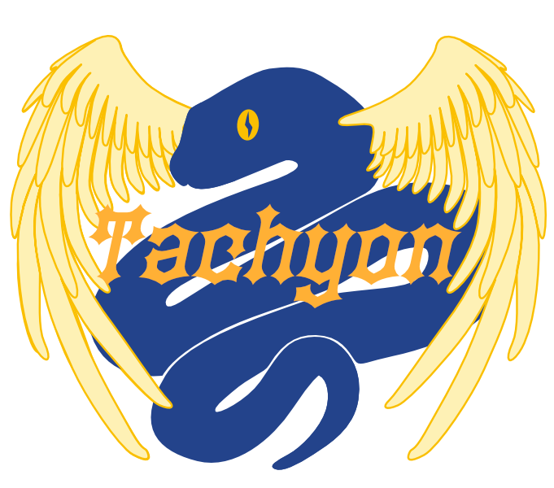

파이썬 3.15의 새로운 기능¶
- 편집자:
Hugo van Kemenade
이 문서는 Python 3.14와 비교하여 Python 3.15의 새로운 기능들을 설명합니다.
자세한 내용은 :ref:`changelog <changelog>`를 참조하십시오.
참고
프리릴리즈 사용자는 이 문서가 현재 초안 형태임을 인지해야 합니다. Python 3.15 출시가 가까워짐에 따라 내용이 실질적으로 업데이트될 예정이므로, 이전 버전도 읽은 후에도 다시 확인해 볼 가치가 있습니다.
요약 – 릴리스 하이라이트¶
PEP 798: 컴프리헨션에서 언패킹 처리
PEP 829: :ref:`패키지 시작 구성 파일 <whatsnew315-startup-files>`
PEP 728: :ref:`TypedDict의 타입이 있는 추가 항목 <whatsnew315-typeddict>`
PEP 747: :ref:`TypeForm을 사용한 타입 형식 주석 처리 <whatsnew315-typeform>`
PEP 800: 타입 시스템의 분리된 베이스 클래스
PEP 782: Python 바이트 객체를 생성하는 새로운 PyBytesWriter C API <whatsnew315-pybyteswriter>
PEP 803, 820, 793: 무료 스레딩 빌드를 위한 안정적인 ABI 및 관련 C API
JIT 컴파일러가 <whatsnew315-jit>에서 크게 업그레이드되었습니다
:ref:`공식 Windows 64비트 바이너리는 이제 테일 호출 인터프리터 <whatsnew315-windows-tail-calling-interpreter>`를 사용합니다:
새로운 기능¶
PEP 810: 명시적 지연 임포트¶
대규모 Python 애플리케이션은 종종 시작 시간이 느린 문제를 겪습니다. 이 문제의 주요 원인 중 하나는 임포트 시스템입니다. 모듈이 임포트될 때, Python은 파일을 찾고, 디스크에서 읽어와, 바이트코드로 컴파일하고, 모든 최상위 코드를 실행해야 합니다. 종속성이 깊은 애플리케이션의 경우, 가져온 코드 대부분이 특정 실행 동안 실제로 사용되지 않더라도 이 과정에 몇 초가 걸릴 수 있습니다.
개발자들은 임포트를 함수 내부로 이동시키거나, 필요할 때 모듈을 로드하기 위해 :mod:`importlib`를 사용하거나, 불필요한 종속성을 피하기 위해 코드를 재구성하여 이 문제를 해결해 왔습니다. 이러한 접근 방식은 작동하지만 코드의 가독성과 유지관리를 어렵게 하고, 전체 코드베이스에 임포트 문을 흩뿌리며, 일관되게 적용하는 데 규율이 필요합니다.
Python은 이제 새로운 lazy 소프트 키워드를 사용한 명시적인 lazy 가져오기를 통해 더 깔끔한 솔루션을 제공합니다. 임포트를 lazy로 표시하면, Python은 가져온 이름이 처음 사용될 때까지 실제 모듈 로딩을 연기합니다. 이를 통해 파일 맨 위에 모든 임포트를 선언하는 조직적 이점은 누리면서 실제로 사용하는 모듈에 대한 로딩 비용만 지불할 수 있습니다.
lazy 키워드는 import 및 from ... import 문을 모두 사용합니다. lazy import heavy_module 을 작성할 때, 파이썬은 모듈을 즉시 로드하지 않습니다. 대신 가벼운 프록시 객체를 생성합니다. 실제 모듈 로딩은 해당 이름을 처음 접근할 때 투명하게 발생합니다:
lazy import json
lazy from pathlib import Path
print("Starting up...") # yet:json and pathlib not loaded yet
data = json.loads('{"key": "value"}') # json loads here
p = Path(".") # pathlib loads here
이 메커니즘은 상위 레벨에서 많은 모듈을 가져오지만 실제 실행 시에는 그 일부만 사용할 수 있는 애플리케이션에 특히 유용합니다. 지연 로딩은 코드 재구조화나 코드베이스 전반에 걸친 조건부 임포트 없이 시작 지연 시간을 줄입니다.
지연 로드된 모듈 불러오기가 실패하는 경우(예를 들어, 해당 모듈이 존재하지 않는 경우), Python은 임포트 시점이 아니라 사용되는 지점에서 예외를 발생시킵니다. 관련 트레이스백에는 이름에 접근한 위치와 원래의 임포트 구문이 모두 포함되어 있어 오류 진단 및 디버깅이 용이합니다.
소스를 수정하지 않고 전역적으로 지연 로드를 활성화하려는 경우에는 Python에서 -X lazy_imports 명령줄 옵션과 PYTHON_LAZY_IMPORTS 환경 변수를 제공합니다. 둘 다 두 개의 값을 받습니다. all``은 모든 임포트를 기본적으로 지연되게 만들고, ``normal``(기본값)은 소스 코드에서 ``lazy 키워드를 존중합니다. sys.set_lazy_imports`와 :func:`sys.get_lazy_imports() 함수를 사용하면 런타임에 이 모드를 변경하고 조회할 수 있습니다.
더 선택적인 제어를 위해, sys.set_lazy_imports_filter() 는 특정 모듈이 지연 로드되어야 하는지 여부를 결정하는 호출 가능한 객체를 받습니다. 이 필터는 세 가지 인수를 받습니다: 임포트하는 모듈의 이름(또는 None), 가져온 모듈의 이름, 그리고 fromlist(일반 임포트의 경우 None). 만약 지연 임포트를 허용하려면 True 를 반환해야 하며, 강제로 즉시 로드를 하려면 False 를 반환해야 합니다. 이를 통해 서드파티 종속성은 즉시로 유지하면서 사용자 애플리케이션 모듈만 지연되게 만드는 패턴을 구현할 수 있습니다:
import sys
# myapp 모듈에서 lazy 로딩에 사용되는 필터 함수. 'myapp.'으로 시작하는 모듈은 지연 로드 대상으로 간주합니다.
def myapp_filter(importing, imported, fromlist):
return imported.startswith("myapp.")
sys.set_lazy_imports_filter(myapp_filter)
# 모든 임포트를 기본적으로 지연 로드로 설정
sys.set_lazy_imports("all")
# lazy (필터와 일치함으로 인해 지연 로딩됨)
import myapp.slow_module
# eager (필터와 일치하지 않아 즉시 로드됨)
import json
프로क्सी 자체는 프로그래밍 방식으로 지연 임포트를 감지해야 하는 코드를 위해 :class:`types.LazyImportType`으로 사용할 수 있습니다.
lazy 키워드는 사용 가능한 위치에 일부 제한이 있습니다. 지연 임포트는 모듈 범위에서만 허용됩니다. 함수 본문, 클래스 본문, 또는 try/except/finally 블록 내부에서 lazy 를 사용하는 경우 SyntaxError 가 발생합니다. 또한 스타 임포트나 미래 임포트는 지연될 수 없습니다(lazy from module import * 및 lazy from __future__ import ... 모두 SyntaxError 를 발생시킵니다).
직접 lazy 키워드를 사용할 수 없는 코드(예: 3.15 이상에서 여전히 지연 임포트를 사용하면서 Python 버전 3.15보다 낮은 버전을 지원하는 경우)의 경우, 모듈은 이 경우 해당 모듈에 대한 일반적인 ``import` 문은 lazy 키워드와 동일한 의미론을 갖는 지연으로 처리됩니다:
__lazy_modules__ = ["json", "pathlib"]
# lazy
import json
# 여전히 immediate(즉시)로 로드됨
import os
더 보기
전체 사양 및 근거는 :pep:`810`을 참조하십시오.
(Pablo Galindo Salgado와 Dino Viehland가 gh-142349\를 통해 기능을 구현하였습니다.)
PEP 814: frozendict 내장 타입을 추가함¶
새로운 immutable 타입인 frozendict`가 :mod:`builtins 모듈에 추가됩니다. 이 타입은 생성 후 수정할 수 없습니다. frozendict`는 ``dict``의 서브 클래스가 아니며, ``object``에서 직접 상속받습니다. :class:!frozendict`는 키와 값 모두 해시 가능하면 hashable`합니다. :class:!frozendict`는 삽입 순서를 보존하지만, 비교 시에는 순서를 고려하지 않습니다.
예를 들어:
>>> a = frozendict(x=1, y=2)
>>> a
frozendict({'x': 1, 'y': 2})
>>> a['z'] = 3
Traceback (most recent call last):
File "<python-input-2>", line 1, in <module>
a['z'] = 3
~^^^^^
TypeError: 'frozendict' object does not support item assignment
>>> b = frozendict(y=2, x=1)
>>> hash(a) == hash(b)
True
>>> a == b
True
다음 표준 라이브러리 모듈들이 frozendict`를 허용하도록 업데이트되었습니다: :mod:`copy, decimal, json, marshal, plistlib`(직렬화 전용), :mod:`pickle, pprint, 그리고 xml.etree.ElementTree.
eval`와 :func:`exec`는 *globals*에 대해 :class:()!frozendict`를 허용하며, type`과 :meth:`str.maketrans`는 *dict*에 대해 :class:()!frozendict`를 허용합니다.
isinstance(arg, dict) 를 사용하여 dict 타입을 확인하는 코드는 이를 isinstance(arg, (dict, frozendict)) 로 업데이트하여 frozendict 타입도 허용하거나, 또는 다른 매핑 타입인 MappingProxyType 등을 허용하려면 isinstance(arg, collections.abc.Mapping) 을 사용할 수 있습니다.
더 보기
전체 사양 및 근거는 :pep:`814`를 참조하십시오.
(Victor Stinner와 Donghee Na가 gh-141510\를 통해 기능을 구현하였습니다.)
PEP 661: 보내는 기본 타입 추가<add sentinel built-in type>¶
새로운 sentinel 타입이 간결한 표현으로 고유한 센티넬 값을 생성하기 위해 builtins 모듈에 추가되었습니다. 이 센티넬 객체는 복사 시 식별자를 보존하며, | 연산자와 함께 사용되는 타입 표현식에서 지원되며 모듈 및 이름으로 가져올 수 있을 때 피클링이 가능합니다.
(Tal Einat가 :gh:`148829`를 통해 기여했습니다.)
더 보기
자세한 내용은 :pep:`661`을 참조하십시오.
PEP 799: 전용 프로파일링 패키지<dedicated profiling package>¶
새로운 profiling 모듈이 추가되어 파이썬 내장 프로파일링 도구들을 단일하고 일관된 네임스페이스 아래 정리합니다. 이 모듈에는 다음 내용들이 포함됩니다:
profiling.tracing: 결정론적 함수 호출 추적 (cProfile에서 이전됨).profiling.sampling: 새로운 통계적 샘플링 프로파일러 (Tachyon이라는 이름입니다).
cProfile 모듈은 하위 호환성을 위해 별칭으로 유지됩니다. profile 모듈은 더 이상 사용되지 않으며 Python 3.17에서 제거될 예정입니다.
더 보기
자세한 내용은 :pep:`799`를 참조하십시오.
(Pablo Galindo와 László Kiss Kollár가 :gh:`138122`를 통해 기여했습니다.)
Tachyon: 고주파 통계 샘플링 프로파일러¶
{kind=link}

새로운 통계적 샘플링 프로파일러(Tachyon)가 :mod:`profiling.sampling`으로 추가되었습니다. 이 프로파일러는 코드 수정이나 프로세스 재시작을 요구하지 않고도 실행 중인 파이썬 프로세스의 낮은 오버헤드 성능 분석을 가능하게 합니다.
모든 함수 호출을 계측하는 결정론적 프로파일러(예: profiling.tracing)와 달리, 샘플링 프로파일러는 실행 중인 프로세스에서 주기적으로 스택 추적을 캡처합니다. 이 접근 방식은 가상적으로 오버헤드가 거의 없으면서 최대 1,000,000 Hz 의 샘플링 속도를 달성하여(기여 시점 기준) 파이썬에서 이용 가능한 가장 빠른 샘플링 프로파일러이며, 프로덕션 환경에서 성능 문제를 디버깅하는 데 이상적입니다. 이 기능은 전통적인 프로파일링 접근 방식이 너무 방해가 될 수 있는 프로덕션 시스템의 성능 문제 디버깅에 특히 유용합니다.
주요 기능에는 다음이 포함됩니다:
제로-오버헤드 프로파일링: 성능에 영향을 주지 않고 모든 실행 중인 파이썬 프로세스에 연결할 수 있습니다. 애플리케이션을 재시작하거나 속도를 늦출 여유가 없는 프로덕션 디버깅 시 이상적입니다.
코드 수정 불필요: 재시작 없이 기존 애플리케이션을 프로파일링할 수 있습니다. 단순히 PID로 실행 중인 프로세스를 지정하여 데이터를 수집하기 시작하면 됩니다.
유연한 대상 모드:
PID로 실행 중인 프로세스 프로파일링 (
attach) - 이미 실행된 애플리케이션에 연결합니다.스크립트를 실행하고 프로파일링 (
run) - 실행 시작 시점부터 프로파일링합니다.모듈을 실행하고 프로파일링 (
run -m) -python -m module로 실행되는 패키지를 프로파일링합니다.실행 중인 프로세스의 단일 스냅샷 캡처 (
dump) - 모든 스레드(또는--async-aware를 사용한 모든 asyncio 작업의) 트레이스백 스타일 스택을 출력합니다. 멈춘 프로세스를 조사하는 데 유용합니다.
여러 프로파일링 모드: 성능 조사를 기반으로 측정할 항목을 선택하십시오:
벽시계 시간 (
--mode wall, 기본값): I/O, 네트워크 대기 및 블로킹 작업을 포함한 실제 경과 시간을 측정합니다. 프로그램을 위해 달력 시간이 어디에 사용되는지 이해하는 데 사용하며, 외부 리소스를 기다리는 경우도 포함됩니다.CPU 시간 (
--mode cpu): I/O 대기 및 블로킹을 제외한 순수 CPU 실행 시간만 측정합니다. 이를 사용하여 CPU 바운드 병목 현상을 식별하고 계산 작업을 최적화할 수 있습니다.GIL 잠금 시간 (
--mode gil): 파이썬의 전역 인터프리터 록을 보유하는 동안의 시간을 측정합니다. 이를 사용하여 멀티스레드 애플리케이션에서 GIL 사용을 지배하는 스레드를 식별할 수 있습니다.예외 처리 시간 (
--mode exception): 활성 예외가 있는 스레드에서만 샘플을 캡처합니다. 이를 사용하여 예외 처리 오버헤드를 분석할 수 있습니다.
스레드 인식 프로파일링: 모든 스레드를 프로파일링하는 옵션 (
-a) 또는 메인 스레드만 프로파일링하는 옵션을 선택하며, 멀티스레드 애플리케이션 동작을 이해하는 데 필수적입니다.여러 출력 형식: 워크플로우에 가장 적합한 시각화를 선택하십시오:
--pstats: :mod:`pstats`와 호환되는 상세한 표 형식의 통계를 생성합니다. 함수 수준의 타이밍을 직접 및 누적 샘플로 보여줍니다. 상세 분석 및 기존 파이썬 프로파일링 도구와의 통합에 가장 적합합니다.--collapsed: 축소된 스택 트레이스를 생성합니다(스택당 한 줄). 이 형식은 Brendan Gregg의 FlameGraph 스크립트나 speedscope와 같은 외부 도구로 플레임 그래프를 생성하도록 특별히 설계되었습니다.--flamegraph: D3.js를 사용하여 자체 포함형 대화형 HTML 플레임 그래프를 생성합니다. 브라우저에서 즉시 열어 시각적으로 분석할 수 있습니다. 플레임 그래프는 너비가 사용된 시간을 나타내는 호출 계층을 보여주므로 병목 현상을 한눈에 파악하기 쉽습니다.--gecko: `Firefox Profiler <https://profiler.firefox.com>`와 호환되는 Gecko 프로파일러 형식을 생성합니다. 이 출력을 Firefox Profiler에 업로드하여 스택 차트(stack charts), 마커, 네트워크 활동과 같은 기능을 갖춘 고급 타임라인 기반 분석을 수행할 수 있습니다.--heatmap: 라인 수준의 샘플 수를 가진 대화형 HTML 히트맵 시각화를 생성합니다. 소스 코드 수준에서 시간이 정확히 어디에 사용되는지를 보여주는 파일별 히트맵과 함께 디렉터리를 만듭니다.
실시간 상호작용 모드: `–live`를 사용하는 실시간 TUI 프로파일러입니다. 앱이 실행되는 동안 사용자와 상호작용할 수 있는 정렬 및 필터링을 통해 성능을 모니터링합니다.
비동기 인식 프로파일링: 작업 기반 스택 재구성을 사용하여 async/await 코드를 프로파일링합니다(–async-aware). 어떤 코루틴이 시간을 소비하는지 확인하며, 실행 중인 작업만 보거나 대기 중인 작업을 포함한 모든 작업을 볼 수 있는 옵션이 제공됩니다.
Opcode 수준 프로파일링: 명령어 수준 프로파일링을 위한 바이트코드 opcode 정보를 수집합니다(–opcodes). 적응형 인터프리터의 특수화를 포함하여 어떤 바이트코드 명령어가 실행되는지를 보여줍니다.
사용 가능한 모든 출력 형식, 프로파일링 모드 및 구성 옵션을 포함한 전체 설명은 :mod:`profiling.sampling`을 참조하십시오.
(Pablo Galindo 및 László Kiss Kollár가 gh-135953 및 :gh:`138122`를 통해 기능을 구현하였습니다.)
PEP 831: 기본적으로 프레임 포인터를 활성화합니다.¶
CPython은 이제 지원하는 플랫폼에서 기본적으로 프레임 포인터와 함께 빌드됩니다. 이는 컴파일러 플래그 -fno-omit-frame-pointer 및 -mno-omit-leaf-frame-pointer 를 사용하며, 네이티브 스택 언와인딩을 시스템 프로파일러, 디버거, 충돌 분석 도구, eBPF 기반 관측 가능성 도구에 대해 더 빠르고 안정적으로 만듭니다.
이 플래그들은 :mod:`sysconfig`를 통해 노출되므로 파이썬 빌드 구성을 사용하는 도구로 구축된 확장 모듈은 기본적으로 프레임 포인터를 상속받습니다. 이러한 전파는 의도적인 것입니다: 혼합된 Python/네이티브 프로파일링에는 인터프리터, 확장 모듈, 임베딩 애플리케이션 및 네이티브 라이브러리를 통해 끊어지지 않은 프레임포인터 체인이 필요합니다.
중요
서드파티 빌드 백엔드와 네이티브 빌드 시스템은 파이썬의 sysconfig 값을 사용할 때 이러한 플래그를 유지해야 합니다. 파이썬의 컴파일러 플래그를 상속받지 않고 C, C++, Rust 또는 기타 네이티브 코드를 컴파일하는 빌드 시스템 자체적으로 동등한 프레임 포인터 플래그를 활성화해야 합니다. 프레임 포인터 없이 빌드된 단일 네이티브 구성 요소만으로도 전체 파이썬 프로세스의 스택 언와인딩을 깨뜨릴 수 있습니다.
(Pablo Galindo Salgado 및 Savannah Ostrowski가 :gh:`149201`에 기여하였으며; PEP 831은 Pablo Galindo Salgado, Ken Jin, Savannah Ostrowski, Diego Russo가 작성했습니다.)
더 보기
자세한 내용은 :pep:`831`을 참조하십시오.
PEP 798: 컴프리헨션에서의 언패킹¶
리스트, 세트 및 딕셔너리 컴프리헨션뿐만 아니라 제너레이터 표현식도 이제 * 및 ** 를 이용한 언패킹을 지원합니다. 이는 PEP 448 의 언패킹 구문을 컴프리헨션으로 확장하여 임의의 수의 이터러블이나 딕셔너리를 단일 평면 구조로 결합하기 위한 새로운 구문을 제공합니다. 이 새로운 구문은 중첩된 컴프리헨션, itertools.chain(), 및 itertools.chain.from_iterable() 에 대한 직접적인 대안입니다. 예시:
>>> lists = [[1, 2], [3, 4], [5]]
>>> [*L for L in lists] # equivalent to [x for L in lists for x in L]
[1, 2, 3, 4, 5]
>>> sets = [{1, 2}, {2, 3}, {3, 4}]
>>> {*s for s in sets} # equivalent to {x for s in sets for x in s}
{1, 2, 3, 4}
>>> dicts = [{'a': 1}, {'b': 2}, {'a': 3}]
>>> {**d for d in dicts} # equivalent to {k: v for d in dicts for k,v in d.items()}
{'a': 3, 'b': 2}
제너레이터 표현식도 유사하게 언패킹을 사용하여 여러 이터러블에서 값을 반환할 수 있다:
>>> gen = (*L for L in lists) # equivalent to (x for L in lists for x in L)
>>> list(gen)
[1, 2, 3, 4, 5]
이 변경 사항은 비동기 제너레이터 표현식으로도 확장되어, 예를 들어 (*a async for a in agen()) 는 (x async for a in agen() for x in a) 와 같습니다.
더 보기
자세한 내용은 :pep:`798`을 참조하십시오.
(Adam Hartz가 gh-143055\를 통해 기능을 구현하였습니다.)
PEP 829: 패키지 시작 구성 파일¶
-S 가 제공되지 않을 때 site 모듈에 의해 로드되는 .pth files 파일 <site-pth-files>은 라인이 import (뒤에 공백 또는 탭)으로 시작할 경우, sys.path 를 확장하고 임의 코드를 실행하는 내용을 포함할 수 있습니다. 후자의 기능은 복잡할 수 있는데, 왜냐하면 파이썬{ }가 시작될 때 정확히 무엇이 실행되는지 알기 어렵기 때문입니다.
전처리가 가능한 코드를 감사하는 능력을 개선하기 위한 단계로, Python 3.15는 pkg.mod:callable 형태의 진입점 사양을 포함하는 .start 파일 를 도입했습니다. 여기서 pkg.mod 은 주어진 콜러블의 import 경로입니다. 파이썬{ }가 시작될 때, 해당 콜러블이 로케이션되어 인자 없이 호출됩니다.
.pth 파일의 import 라인은 조용히 사용 중단되었습니다. 일치하는 .start 파일을 찾으면, .pth 파일의 import 라인은 무시됩니다. .pth 파일의 sys.path 확장 라인에는 변경 사항이 없습니다.
또한, site 모듈은 여러 사이트 디렉터리에 대한 시작 처리를 일괄 처리할 수 있는 site.StartupState`를 제공합니다. 이는 모든 정적 경로 확장이 시작 코드가 실행되기 전에 적용되도록 보장합니다. :func:`site.main`은 일반 인터프리터 시작 중 모든 시작 구성 파일을 일괄 처리하기 위해 이 클래스의 인스턴스를 암묵적으로 사용합니다. 동일한 일괄 처리 동작이 필요한 호출자는 :class:`~site.StartupState`를 직접 구축하고, :meth:`~site.StartupState.addsitedir, addusersitepackages(), 및 :meth:`~site.StartupState.addsitepackages`로 구동한 다음, 배치 처리 마지막에 한번 :meth:`~site.StartupState.process`를 호출할 수 있습니다.
PEP 803 – 자유 스레드 빌드를 위한 안정적인 ABI¶
Stable ABI 을 대상으로 하는 C 확장 기능은 이제 새로운 자유 스레드 빌드를 위한 안정적인 ABI (별칭 abi3t 으로 알려짐)를 위해 컴파일될 수 있어, CPython의 free-threaded builds 와 호환됩니다. 이는 일반적으로 소스 코드에 다소 복잡한 변경이 필요합니다. 구체적으로 다음과 같습니다:
Switching to API introduced in PEP 697 (Python 3.12), such as negative
basicsizeandPyObject_GetTypeData(), rather than makingPyObjectpart of the instance struct; andPyInit_함수에서 새로운 내보내기 후크인, PEP 793 에서 이 목적을 위해 도입된PyModExport_*로 전환하고, PEP 820 에서 도입된 새로운PySlot구조를 사용하는 것.
안정적인 ABI는 CPython이 제공하는 모든 기능을 제공하지 않습니다. abi3t`로 전환할 수 없는 확장 기능은 기존의 안정적인 ABI(`abi3) 및 자유 스레딩을 위한 버전별 ABI(cp315t)를 별도로 계속 빌드해야 합니다.
블루 빌드의 안정적인 ABI는 일반적으로 빌드 도구(예를 들어, Setuptools, meson-python, scikit-build-core 또는 Maturin)에서 선택해야 합니다. 현재 시점에서는 이러한 도구들이 abi3t 를 지원하지 않습니다. 만약 사용하시는 도구가 이런 경우라면, cp315t 을 별도로 컴파일하십시오. 빌드 도구를 사용하지 않거나 작성하는 과정이라면, Py_TARGET_ABI3T 매크로를 설정하여 안정 ABI용으로 컴파일하기 에서 논의된 바와 같이 abi3t 를 선택할 수 있습니다.
abi3t 로 전환하기 위한 실질적인 :ref:`마이그레이션 가이드 <abi3t-migration-howto>`가 제공됩니다.
더 보기
자세한 정보는 :pep:`803`을 참고하십시오.
PEP 788: 인터프리터 최종화로부터 C API 보호¶
C API에서는 인터프리터 최종화 가 많은 확장 모듈에 문제를 일으킬 수 있습니다. 왜냐하면 스레드 상태를 첨부하는 과정 자체가 스레드를 영구적으로 중지시키고 데드락이나 기타 오작동을 유발하기 때문입니다. 또한, 역사적으로 인터프리터가 살아있는지 안전하게 확인할 방법이 없었기 때문에, 다른 스레드가 첨부하려고 시도하는 동안 코드가 컨커런트하게 인터프리터를 삭제할 경우 충돌이 발생했습니다.
이러한 문제들을 우회하기 위해 이제 여러 새로운 API 그룹들이 있습니다:
인터프리터가 최종화되는 것을 방지하는 :ref:`인터프리터 가드 <interpreter-guards>`입니다.
인터프리터가 컨커런트하게 최종화되거나 삭제될 수 있는 인터프리터에 대한 스레드 안전한 액세스를 허용하는 :ref:`인터프리터 뷰 <interpreter-views>`입니다.
최종화 방지 기능을 내장하여 스레드 상태를 자동으로 첨부하고 분리하는 :ref:`새로운 API <c-api-attach-detach>`입니다.
In addition, APIs in the PyGILState family (most notably
PyGILState_Ensure() and PyGILState_Release()) have been
soft deprecated. There is no plan to remove them, and existing
code will continue to work, but there will be no new PyGILState APIs
in future versions of Python.
더 보기
더 자세한 정보는 :pep:`788`을 참조하십시오.
(Peter Bierma가 gh-149101\를 통해 기능을 구현하였습니다.)
개선된 에러 메시지¶
인터프리터는 이제 객체의 속성에 액세스했을 때 해당 속성이 존재하지 않을 경우, 하지만 그 멤버 중 하나를 통해 유사한 속성을 사용할 수 있는 경우에
AttributeError예외에서 더 도움이 되는 제안을 제공합니다.예를 들어, 객체가 요청된 이름을 노출하는 속성을 가지고 있다면, 오류 메시지가 해당 내부 속성을 통해 액세스할 것을 제안합니다:
@dataclass class Circle: radius: float @property def area(self) -> float: return pi * self.radius**2 class Container: def __init__(self, inner: Circle) -> None: self.inner = inner circle = Circle(radius=4.0) container = Container(circle) print(container.area)
이 코드를 실행하면 이제 더 명확한 제안을 생성합니다:
Traceback (most recent call last): File "/home/pablogsal/github/python/main/lel.py", line 42, in <module> print(container.area) ^^^^^^^^^^^^^^ AttributeError: 'Container' object has no attribute 'area'. Did you mean '.inner.area' instead of '.area'?
내장형 타입에 대한 :exc:`AttributeError`가 Levenshtein 거리로 가까운 일치 항목을 찾지 못할 경우, 오류 메시지는 이제 다른 언어(JavaScript, Java, Ruby, C#)의 일반적인 메서드 이름 정적 테이블을 확인하고 Python의 등가물을 제안합니다:
>>> [1, 2, 3].push(4) Traceback (most recent call last): ... AttributeError: 'list' object has no attribute 'push'. Did you mean '.append'? >>> 'hello'.toUpperCase() Traceback (most recent call last): ... AttributeError: 'str' object has no attribute 'toUpperCase'. Did you mean '.upper'?
Python의 등가물이 메서드가 아니라 언어 구성 요소인 경우, 해당 힌트는 구성 요소를 직접 설명합니다:
>>> {}.put("a", 1) Traceback (most recent call last): ... AttributeError: 'dict' object has no attribute 'put'. Use d[k] = v.
변경 가능한(mutable) 메서드를 불변형(immutable type)에 호출할 때, 힌트는 변경 가능한 대응 기능을 제안합니다:
>>> (1, 2, 3).append(4) Traceback (most recent call last): ... AttributeError: 'tuple' object has no attribute 'append'. Did you mean to use a 'list' object?
이러한 힌트는 내장 타입의 서브 클래스에도 적용됩니다.
(Matt Van Horn가 gh-146406\를 통해 기능을 구현하였습니다.)
인터프리터는 이제 누락된 속성 때문에
delattr()이 실패할 때 제안을 제공하려고 시도합니다. 기존 속성과 매우 유사한 속성 이름을 사용하면, 인터프리터는 오류 메시지에서 올바른 속성 이름을 제안합니다. 예를 들면:>>> class A: ... pass >>> a = A() >>> a.abcde = 1 >>> del a.abcdf Traceback (most recent call last): ... AttributeError: 'A' object has no attribute 'abcdf'. Did you mean: 'abcde'?
(Nikita Sobolev와 Pranjal Prajapati가 gh-136588\를 통해 기능을 구현하였습니다.)
오류 메시지에서 “argument”이라는 용어를 잘못 사용하는 몇 가지 부분이 수정되었습니다. (Stan Ulbrych가 gh-133382\를 통해 기능을 구현하였습니다.)
기타 언어 변경 사항들¶
Python now uses UTF-8 as the default encoding, independent of the system’s environment. This means that I/O operations without an explicit encoding, for example,
open('flying-circus.txt'), will use UTF-8. UTF-8 is a widely-supported Unicode character encoding that has become a de facto standard for representing text, including nearly every webpage on the internet, many common file formats, programming languages, and more.이는
encoding인수가 제공되지 않을 때만 적용됩니다. 파이썬 버전 간의 최적 호환성을 위해 항상 명시적인encoding인수를 제공해야 합니다. opt-in encoding warning <io-encoding-warning>`를 사용하여 이 변경 사항으로 영향을 받을 수 있는 코드를 식별할 수 있습니다. 특별한 ``encoding=’locale’` 인수는 현재 로케일 인코딩을 사용하며, Python 3.10부터 지원되었습니다.이전 동작을 유지하려면,
PYTHONUTF8=0환경 변수 또는-X utf8=0명령줄 옵션으로 Python의 UTF-8 모드를 비활성화할 수 있습니다.더 보기
더 자세한 내용은 :pep:`686`을 참고하십시오.
(Adam Turner가 gh-133711\를 통해 기여했고, PEP 686은 Inada Naoki가 작성했습니다.)
인터프리터 도움말 (예:
python --help)이 이제 색상으로 표시됩니다. 이는 environment variables <using-on-controlling-color>`를 통해 제어할 수 있습니다. (Hugo van Kemenade가 :gh:`148766\를 통해 기여했습니다.)예외를 발생시킬 수 없는 예외(Unraisable exceptions)는 기본적으로 색상으로 강조 표시됩니다. 이는 environment variables <using-on-controlling-color>`를 통해 제어할 수 있습니다. (Peter Bierma가 :gh:`134170\를 통해 기여했습니다.)
argparse, ast, calendar, difflib, http.server, pickletools, PyREPL tab completion, python –help, sqlite3, timeit, tokenize, unraisable exceptions 및 stdlib (ast, compileall, doctest, gzip, inspect, json.tool, pdb, profiling.sampling, random, regrtest, sqlite3, timeit, tokenize, trace, unittest, uuid, zipapp, zipfile) CLI 도움말에서 색상을 더 지원합니다.
ImportError와ModuleNotFoundError의__repr__()가 이제 구성 시 키워드 인수로 제공된 경우 “name”과 “path”를name=<name>` 및path=<path>로 표시합니다. (Serhiy Storchaka, Oleg Iarygin, Yoav Nir가 :gh:`74185 \를 통해 기여했습니다.)__dict__`와 :attr:!__weakref__` 데스크립터는 이제 필요로 하는 모든 유형에서 공유되는 인터프리터당 단일 데스크립터 인스턴스를 사용합니다. 이는 클래스 생성을 가속화하고 참조 순환을 방지하는 데 도움이 됩니다. (Petr Viktorin가 gh-135228\를 통해 기여했습니다.)-W옵션과PYTHONWARNINGS환경 변수는 이제 해당 필드가 슬래시(/)로 시작하고 끝날 경우, 경고 메시지와 모듈 이름을 일치시키기 위해 리터럴 문자열 대신 정규식을 지정할 수 있습니다. (Serhiy Storchaka가 gh-134716\를 통해 기여했습니다.)타임스탬프 또는 타임아웃 인수를 받는 함수는 이제 정수나 실수뿐만 아니라 모든 실제 숫자 (예:
Decimal및Fraction)를 허용하지만, 이는 정밀도를 높이지는 않습니다. (Serhiy Storchaka가 gh-67795\를 통해 기여했습니다.)
복사(copying) 없이
bytearray에서 바이트를 가져오는bytearray.take_bytes(n=None, /)가 추가되었습니다. 이를 통해 데이터 버퍼링, 네트워크 프로토콜 파싱, 인코딩, 디코딩 및 압축과 같이 변경 가능한 바이트 버퍼와 작업한 후bytes를 반환해야 하는 코드를 최적화할 수 있습니다.take_bytes()로 최적화할 수 있는 일반적인 코드 패턴은 아래에 나열되어 있습니다.코드 리팩토링을 제안합니다¶ 설명
이전 버전
새 버전
def read() -> bytes: buffer = bytearray(1024) ... return bytes(buffer)
def read() -> bytes: buffer = bytearray(1024) ... return buffer.take_bytes()
버퍼의 바이트 내용을 비우기
buffer = bytearray(1024) ... data = bytes(buffer) buffer.clear()
buffer = bytearray(1024) ... data = buffer.take_bytes()
특정 구분자로 버퍼 분할하기
buffer = bytearray(b'abc\ndef') n = buffer.find(b'\n') data = bytes(buffer[:n + 1]) del buffer[:n + 1] assert data == b'abc\n' assert buffer == bytearray(b'def')
buffer = bytearray(b'abc\ndef') n = buffer.find(b'\n') data = buffer.take_bytes(n + 1)
특정 구분자로 버퍼 분할하고, 구분자 이후는 무시하기
buffer = bytearray(b'abc\ndef') n = buffer.find(b'\n') data = bytes(buffer[:n]) buffer.clear() assert data == b'abc' assert len(buffer) == 0
buffer = bytearray(b'abc\ndef') n = buffer.find(b'\n') buffer.resize(n) data = buffer.take_bytes()
(Cody Maloney가 gh-139871\를 통해 기여했습니다.)
compile()\,ast.parse()\,symtable.symtable()\, 및importlib.abc.InspectLoader.source_to_code`와 같이 파이썬 코드를 컴파일하거나 파싱하는 여러 함수는 이제 모듈 이름을 전달할 수 있습니다. 이 기능은 모듈 이름으로 :ref:`filter구문 경고를 확실하게 여과하는 데 필요합니다. (Serhiy Storchaka가 gh-135801\를 통해 기능을 구현하였습니다.)어떤 클래스에 대해서도 *__dict__* 및 *__weakref__* __slots__ <slots>`을 정의할 수 있습니다. (Serhiy Storchaka가 :gh:`41779\를 통해 기능을 구현하였습니다.)
Allowed defining any __slots__ for a class derived from
tuple(including classes created bycollections.namedtuple()). (Contributed by Serhiy Storchaka in gh-41779.)slice형이 이제 서브스크립션을 지원하여 제네릭 형\가 되었습니다. (James Hilton-Balfe가 gh-128335\를 통해 기능을 구현하였습니다.)클래스
memoryview는 이제 float complex 및 double complex C 타입을 지원합니다. 각각 포맷 문자는'Zf'및'Zd'입니다. (Victor Stinner가 gh-146151 \와 gh-148675 \를 통해 기능을 구현하였습니다.)bytes.replace`의 *count* 인자를 키워드로 지정할 수 있습니다. (Stan Ulbrych가 :gh:`147856()\를 통해 기능을 구현하였습니다.)단항 플러스가 이제 단항 마이너스에 대한 기존 지원을 반영하여
match리터럴 패턴에서 허용됩니다. (Bartosz Sławecki가 gh-145239\를 통해 기능을 구현하였습니다.)임포트 시스템은 이제 계층 순서로 모듈별 잠금을 획득합니다(부모 패키지 후 서브모듈 순). 이는 pkg/sub/__init__.py`가 `pkg.sub.mod`를 임포트할 때, 하나의 스레드가 ``pkg.sub``를 임포트하고 다른 스레드가 ``pkg.sub.mod``를 임포트하는 상황에서 서로 블록하는 오래된 교착 상태를 수정합니다. (Gregory P. Smith가 :gh:`83065\를 통해 기능을 구현하였습니다.)
기본 대화형 셸¶
탭 완성이 이제 fancycompleter`를 기반으로 객체 종류별로 색상 적용이 됩니다. 레거시로 사용하려면 :envvar:`PYTHON_BASIC_COMPLETER`를 설정하여 :mod:`rlcompleter`를 사용하도록 할 수 있습니다. 색상은 또한 :ref:`환경 변수\로 제어할 수도 있습니다. (Antonio Cuni와 Pablo Galindo가 gh-130472\를 통해 기능을 구현하였습니다.)
새로운 모듈¶
math.integer¶
이 모듈은 정수 인수에 대한 수학적 함수 접근을 제공합니다 (PEP 791\). (Serhiy Storchaka가 gh-81313\를 통해 기능을 구현하였습니다.)
개선된 모듈¶
argparse¶
BooleanOptionalAction액션이 단일 대시 길이 옵션과 대체 접두사 문자를 지원합니다. (Serhiy Storchaka가 gh-138525\를 통해 기능을 구현하였습니다.)argparse.ArgumentParser`의 *suggest_on_error* 매개변수가 기본값을 ``True``로 변경되었습니다. 이를 통해 잘못 입력된 인자에 대한 제안을 기본적으로 활성화할 수 있습니다. (Jakob Schluse가 :gh:`140450\를 통해 기능을 구현하였습니다.)(Savannah Ostrowski가 :gh:`142390\를 통해 기능을 구현하였습니다.)인라인 코드 표시가 지정된 곳의 백틱 마크업이
help텍스트로 확장되었으며 이중 백틱(RST 인라인 리터럴 스타일) 지원이 추가되었습니다. (Hugo van Kemenade가 gh-149375\를 통해 기능을 구현하였습니다.)
배열¶
float complex 및 double complex C 타입을 지원합니다. 각각 포맷 문자는
'Zf'및'Zd'입니다. (Victor Stinner가 gh-146151 \와 gh-148675 \를 통해 기능을 구현하였습니다.)반 정밀도 부동 소수점(16비트 IEEE 754 바이너리 교환 형식): 포맷 문자
'e'를 지원합니다. (Sergey B Kirpichev가 gh-146238 \를 통해 기능을 구현하였습니다.)array.typecodes타입이 1자보다 긴 타입 코드(Zf및Zd)를 지원하기 위해str`에서 :class:`tuple`로 변경되었습니다. (Victor Stinner가 :gh:`148675\를 통해 기능을 구현하였습니다.)
ast¶
(Stan Ulbrych가 :gh:`148981()\를 통해 기능을 구현하였습니다.)command-line\를 통해 제어할 수 있습니다. (Stan Ulbrych가 gh-148981\를 통해 기능을 구현하였습니다.)
asyncio¶
태스크 그룹이 외부에서 취소되고,
ExceptionGroup\을 발생시켜야 하는 경우, 이제 부모 태스크의cancel()메서드를 호출합니다. 이렇게 하면 다음await지점에서CancelledError\가 발생하도록 보장하여, 취소 처리가 누락되지 않도록 합니다. (John Belmonte가 gh-127214\를 통해 기능을 구현하였습니다.)
base64¶
pad 매개변수를
(Hauke Dämpfling가 :gh:`143103()\를 통해 기능을 구현하였습니다.)b32encode(),b32decode(),b32hexencode(),b32hexdecode(),b64encode(),b64decode(),urlsafe_b64encode(), 및(Serhiy Storchaka가 :gh:`73613()\를 통해 기능을 구현하였습니다.)b16encode(),b32encode(),b32hexencode(),b64encode(),b85encode(), 및(Serhiy Storchaka가 :gh:`143214()\와 gh-146431\를 통해 기능을 구현하였습니다.)b16decode(),b32decode(),b32hexdecode(),b64decode(),b85decode(), 및(Serhiy Storchaka가 :gh:`144001()\와 gh-146431\를 통해 기능을 구현하였습니다.)b32decode(),b32hexdecode(),b64decode(),urlsafe_b64decode(),a85decode(),b85decode(), 및Smith가 :gh:`146311()\를 통해 기능을 구현하였습니다.)
binascii¶
Base32 인코딩을 위한 함수들을 추가했습니다:
a2b_base32()
(James Seo가 gh-146192\를 통해 기능을 구현하였습니다.)
Ascii85, Base85, 및 Z85 인코딩을 위한 함수들을 추가했습니다:
a2b_ascii85()a2b_base85()
(James Seo 및 Serhiy Storchaka가 gh-101178\를 통해 기능을 구현하였습니다.)
b2a_base32(),a2b_base32(),b2a_base64(), 및(Serhiy Storchaka가 :gh:`73613()\를 통해 기능을 구현하였습니다.)(Serhiy Storchaka가 :gh:`143214()\를 통해 기능을 구현하였습니다.)(Serhiy Storchaka가 :gh:`145980()\를 통해 기능을 구현하였습니다.)a2b_hex(),unhexlify(), 및(Serhiy Storchaka가 :gh:`144001()\와 gh-146431\를 통해 기능을 구현하였습니다.)Smith가 :gh:`146311()\를 통해 기능을 구현하였습니다.)
calendar¶
calendar\의 명령줄 텍스트 출력은 더 많은 색상을 가집니다. 이는 환경 변수\로 제어할 수 있습니다. (Hugo van Kemenade가 gh-148352\를 통해 기능을 구현하였습니다.)calendar\의 명령줄 HTML 출력은 이제 연도-월 옵션을 허용합니다:python -m calendar -t html 2009 06. (Pål Grønås Drange가 gh-140212\를 통해 기능을 구현하였습니다.)calendar.HTMLCalendar클래스에서 생성된 달력 페이지는 이제 다크 모드를 지원하며, 접근성 향상을 위해 HTML5 표준으로 마이그레이션되었습니다. (Jiahao Li 및 Hugo van Kemenade가 gh-137634\를 통해 기능을 구현하였습니다.)
collections¶
concurrent.futures¶
concurrent.futures.ProcessPoolExecutor`의 자식 프로세스 중 하나가 갑자기 종료될 때 오류 보고 기능이 개선되었습니다. 결과 추적 파일에는 이제 종료된 프로세스의 PID와 종료 코드가 표시됩니다. (Jonathan Berg가 :gh:`139486\에서 기여했습니다.)
contextlib¶
ExitStack및contextlib.AsyncExitStack`에 `:keyword:`with및 async with 문과 일관성을 위해 임의의 데스크립터 :meth:!__enter__`,__exit__(),__aenter__(), 그리고__aexit__`를 지원하도록 추가되었습니다. (Serhiy Storchaka가 :gh:`144386()\에서 기여했습니다.)Smith가 :gh:`125862\에서 기여했습니다.)
dataclasses¶
생성된
__init__메서드의 주석에는 더 이상 내부 타입 이름이 포함되지 않습니다.
dbm¶
difflib¶
:func:`difflib.unified_diff`에 옵션 *color* 매개변수를 도입하여, :program:`git diff`와 유사한 색상 출력을 활성화했습니다. 이는 :ref:`environment variables <using-on-controlling-color>`에서 제어할 수 있습니다. (Douglas Thor가 :gh:`133725\에서 기여했습니다.)
difflib.HtmlDiff클래스에 의해 생성되는 HTML diff 페이지의 스타일이 개선되었으며, 출력이 HTML5 표준으로 마이그레이션되었습니다. (Jiahao Li가 gh-134580\에서 기여했습니다.)
email¶
이메일 제너레이터는 이제 주소 헤더에 비-ASCII 이메일 주소(사서함)가 포함되어 로드맵화될 수 없을 때 오류를 발생시킵니다. 이메일 주소 국제화(EAI) 지원 옵션은
EmailPolicy.utf8`에서 논의됩니다. (R David Murray와 Mike Edmunds가 :gh:`122540\에서 기여했습니다.)
faulthandler¶
faulthandler.enable(),faulthandler.dump_traceback(),faulthandler.dump_traceback_later(), 및faulthandler.register`에 *max_threads* 매개변수가 추가되었습니다. (Eric Froemling가 :gh:`149085()\에서 기여했습니다.)
functools¶
:func:`~functools.singledispatchmethod`에 이제 비-:term:`descriptor 호출 가능 객체를 지원합니다. (Serhiy Storchaka가 gh-140873\에서 기여했습니다.)
:func:`~functools.singledispatchmethod`는 일반 메서드를 래핑하고 클래스 속성으로 호출될 경우 두 번째 인자로 디스패치합니다. (Bartosz Sławecki가 :gh:`143535\에서 기여했습니다.)
gc¶
Python 3.14.0-3.14.4에는 새로운 증분 가비지 컬렉터가 함께 제공되었습니다. 그러나 프로덕션 환경에서 상당한 메모리 압박을 보고한 여러 이유(<https://github.com/python/cpython/issues/142516> 기여)로 인해, 3.13 버전의 세대별 GC로 되돌려졌습니다. 이것이 Python 3.14.5 및 이후 버전과 Python 3.15에서 현재 사용되는 GC 방식입니다.
hashlib¶
백엔드 구현 누락으로 인해 런타임에 작동하지 않더라도, 항상 사용 가능한 것이 보장되는 해시 함수들이
hashlib`의 속성으로 존재하는지 확인하십시오. 예를 들어, OpenSSL을 사용할 수 없고 MD5 지원 없이 Python이 빌드된 경우에도 ``hashlib.md5``는 더 이상 :exc:`AttributeError`를 발생시키지 않습니다. (Bénédikt Tran가 :gh:`136929\에서 기여했습니다.)
http.client¶
HTTPConnection및HTTPSConnection생성자에 새로운 max_response_headers 키워드 전용 매개변수가 추가되었습니다. 이 매개변수는 허용되는 응답 헤더의 기본 최대 개수를 덮어씁니다. (Alexander Enrique Urieles Nieto가 gh-131724\에서 기여했습니다.)
http.server¶
(Hugo van Kemenade가 :gh:`146292\를 통해 기능을 구현하였습니다.)알 수 없는 확장자를 가진 파일에 대해 기본
Content-Type헤더를 사용자 정의할 수 있도록default_content_type`과 :option:–content-type <http.server –content-type>` 명령줄 옵션을 추가했습니다. (John Comeau와 Hugo van Kemenade가 gh-113471\를 통해 기능을 구현하였습니다.)HTTP 응답에서 사용자 정의 헤더를 지원하기 위해
SimpleHTTPRequestHandler`에 새로운 ``extra_response_headers`키워드 인수를 추가합니다. (Anton I. Sipos가 gh-135057\를 통해 기능을 구현하였습니다.)HTTP 응답에서 사용자 정의 헤더를 지원하도록 python -m http.server 명령줄 인터페이스에
-H/--header옵션을 추가했습니다. (Anton I. Sipos가 gh-135057\를 통해 기능을 구현하였습니다.)
importlib.metadata¶
이전에 메타데이터 파일을 포함하지 않는 배포 메타데이터 디렉터리에 접근할 때,
metadata()``와 ``Distribution.metadata()``는 파일이 존재하지만 비어 있는 것처럼 빈 ``PackageMetadata객체를 반환했습니다. 이제MetadataNotFound예외가 발생합니다. 배경 및 근거는 importlib_metadata#493 <https://github.com/python/importlib_metadata/issues/493>\를 참고하고, 호환성 우려 사항에 대한 근거는 gh-143387\을 참고하세요. (Jason R. Coombs가 기여했습니다.)
inspect¶
(Serhiy Storchaka가 :gh:`132686()\를 통해 기능을 구현하였습니다.)
json¶
loads()함수에 array_hook 매개변수를 추가합니다. 이는 JSON 리터럴 배열 유형에 대한 콜백을 허용하여 결과로 디코딩된 객체의 Python 리스트를 사용자 정의할 수 있습니다. combinedfrozendict`를 *object_pairs_hook* 매개변수에, 그리고 :class:`tuple`을 ``array_hook``에 전달하면 JSON 데이터를 나타내는 깊게 중첩된 변경 불가능한 Python 구조를 얻을 수 있습니다. (Joao S. O. Bueno가 :gh:`146440\를 통해 기능을 구현하였습니다.)
locale¶
setlocale`은 이제 ``@`()-수정자를 가진 언어 코드를 지원합니다.getlocale`에서는 더 이상 ``@`()-수정자가 조용히 제거되지 않고, 언어 코드에 포함됩니다. (Serhiy Storchaka가 gh-137729\를 통해 기능을 구현하였습니다.)locale.getdefaultlocale()함수에서 사용 지원 중단(deprecated)을 제거합니다. (Victor Stinner가 gh-130796\를 통해 기능을 구현하였습니다.)
math¶
math.isnormal`과 :func:`math.issubnormal()함수를 추가합니다. (Sergey B Kirpichev가 gh-132908\를 통해 기능을 구현하였습니다.)math.fmax(),math.fmin(), 그리고math.signbit()함수를 추가합니다. (Bénédikt Tran가 gh-135853\를 통해 기능을 구현하였습니다.)
mimetypes¶
더 많은 MIME 타입을 추가합니다. (Benedikt Johannes, Charlie Lin, Foolbar, Gil Forcada와 John Franey가 gh-144217, gh-145720, gh-140937, gh-139959, gh-145698, gh-145718, gh-145918, 그리고 gh-144213\를 통해 기능을 구현하였습니다.)
application/x-texinfo를application/texinfo로 이름 변경합니다. (Charlie Lin이 gh-140165 \를 통해 기능을 구현하였습니다.).ai파일의 MIME 타입이application/pdf로 변경되었습니다. (Stan Ulbrych가 gh-141239 \를 통해 기능을 구현하였습니다.)
mmap¶
mmap.mmap`이 이제 Windows에서 *trackfd* 매개변수를 가집니다. 이 값이 ``False``일 경우, *fileno*에 해당하는 파일 핸들러는 복제되지 않습니다. (Serhiy Storchaka가 :gh:`78502\를 통해 기능을 구현하였습니다.)리눅스 커널이 PR_SET_VMA_ANON_NAME <PR_SET_VMA(2const)>`을 지원하는 경우, 익명 메모리 매핑에 주석을 달기 위해 :meth:`mmap.mmap.set_name 메서드를 추가했습니다 (Linux 5.17 이상). (Donghee Na가 gh-142419\를 통해 기능을 구현하였습니다.)
os¶
Linux 커널 버전 4.11 및 이후, glibc 버전 2.28 및 이후에서
os.statx`를 추가합니다. (Jeffrey Bosboom과 Victor Stinner가 :gh:`83714()\를 통해 기능을 구현하였습니다.)os.makedirs()함수에 이제 중간 디렉터리의 모드를 지정할 수 있는 parent__mode 매개변수가 있습니다. 이 기능은parent_\_mode=mode를 전달하여 Python 3.6 이전의 동작과 일치시키는 데 사용할 수 있습니다. (Zackery Spytz와 Gregory P. Smith가 gh-86533 \를 통해 기능을 구현하였습니다.)
os.path¶
:func:`~os.path.realpath`에서 all-but-last 모드 지원을 추가합니다. (Serhiy Storchaka가 :gh:`71189`를 통해 기능 구현함.)
os.path.realpath`의 *strict* 매개변수는 새로운 값인 :data:`os.path.ALLOW_MISSING()\을 받아들입니다. 해당 값을 사용하면FileNotFoundError\를 제외한 에러는 다시 발생하며, 결과 경로는 존재하지 않을 수 있지만 심볼릭 링크는 포함하지 않습니다. (Petr Viktorin이 CVE 2025-4517\를 위해 기능을 구현하였습니다.)
pdb¶
pickle¶
프라이빗 메서드와 중첩된 클래스에 대한 피클링을 지원합니다. (Zackery Spytz와 Serhiy Storchaka가 :gh:`77188`를 통해 기능 구현함.)
pickletools¶
pickletools커맨드 라인 인터페이스의 출력은 기본적으로 색상이 지정되어 있습니다. 이는 :ref:`환경 변수 <using-on-controlling-color>`를 사용하여 제어할 수 있습니다. (Hugo van Kemenade가 :gh:`149026`를 통해 기능 구현함.)
pprint¶
pprint.pprint(),pprint.pformat(),pprint.pp()에 expand 키워드 인수를 추가합니다. true인 경우, indent 를 제공할 때 예쁘게 출력된json.dumps()와 유사하게 서식이 지정된 출력을 얻을 수 있습니다. (Stefan Todoran, Semyon Moroz 및 Hugo van Kemenade가 gh-112632 를 통해 기능 구현함.):mod:`pprint`에 t-string 지원을 추가합니다. (Loïc Simon 및 Hugo van Kemenade가 :gh:`134551`를 통해 기능 구현함.)
re¶
re.prefixmatch()와 해당re.Pattern.prefixmatch()는 기존의 그리고 이제 soft deprecated 된re.match()및re.Pattern.match()API에 대한 대안적이고 더 명시적인 이름으로 추가되었습니다. 이는 Zen of Python의 “명시성이 암시성보다 낫다”라는 만트라를 따름으로써 match 가 의미하는 바에 대한 혼란을 줄이도록 의도된 것입니다. 대부분의 다른 언어 정규 표현식 라이브러리는 Python이 항상 search 라고 부르는 것을 나타내기 위해 match 라는 이름을 사용합니다. (Gregory P. Smith가 gh-86519 를 통해 기능 구현함.)
resource¶
새로운 상수 추가:
RLIMIT_NTHR,RLIMIT_UMTXP,RLIMIT_THREADS,RLIM_SAVED_CUR, 및RLIM_SAVED_MAX. (Serhiy Storchaka가 :gh:`137512`를 통해 기능 구현함.)
shelve¶
socket¶
ISO-TP CAN 프로토콜에 대한 상수 추가. (Patrick Menschel 및 Stefan Tatschner가 :gh:`86819`를 통해 기능 구현함.)
sqlite3¶
ssl¶
ssl.HAS_PSK_TLS13`을 통해 :mod:`ssl모듈이 TLSv1.3에서 `:rfc:`9258`에 설명된 “외부 PSK”를 지원하는지 나타냅니다. (Will Childs-Klein가 :gh:`133624`를 통해 기능 구현함.)SSL 키 교환에 사용되는 그룹 관리를 위한 새로운 메서드가 추가되었습니다.
ssl.SSLContext.set_groups`는 키 교환을 수행하는 데 허용된 그룹을 설정하며, 이전의 :meth:`ssl.SSLContext.set_ecdh_curve()메서드를 확장합니다. 이 새로운 API는 여러 그룹 목록을 제공할 수 있는 기능을 제공하며 ECDH 곡선 외에도 고정 필드 및 포스트 양자 그룹을 지원합니다. 또한 이 메서드는 TLS 핸드셰이크에서 전송되는 키 공유를 제어하는 데 사용될 수도 있습니다.:meth:`ssl.SSLSocket.group`은 TLS 핸드셰이크 완료 후 현재 연결의 키 교환에 대해 선택된 그룹을 반환합니다. 이 호출에는 OpenSSL 3.2 이상이 필요합니다.
:meth:`ssl.SSLContext.get_groups`는 컨텍스트에 현재 설정된 최저 및 최고 TLS 버전에 호환되는 모든 사용 가능한 키 교환 그룹 목록을 반환합니다. 이 호출에는 OpenSSL 3.5 이상이 필요합니다.
(Ron Frederick가 gh-136306\를 통해 기능을 구현하였습니다.)
새로운 메서드
ssl.SSLContext.set_ciphersuites`를 추가하여 TLS 1.3 암호화 스위트를 설정할 수 있습니다. TLS 1.2 또는 그 이전 버전의 경우, :meth:`ssl.SSLContext.set_ciphers()사용을 계속해야 합니다. 두 호출 모두 동일한 컨텍스트에서 수행할 수 있으며, 선택된 암호화 스위트는 연결이 이루어질 때 협상되는 TLS 버전에 따라 달라집니다. (Ron Frederick가 :gh:`137197`에 기여함.)시그니처 알고리즘 관리를 위한 새 메서드를 추가했습니다:
:func:`ssl.get_sigalgs`는 사용 가능한 모든 TLS 시그니처 알고리즘 목록을 반환합니다. 이 호출은 OpenSSL 3.4 이상을 요구합니다.
:meth:`ssl.SSLContext.set_client_sigalgs`는 인증서 기반 클라이언트 인증에 허용되는 시그니처 알고리즘을 설정합니다.
:meth:`ssl.SSLContext.set_server_sigalgs`는 서버가 TLS 핸드셰이크를 완료하는 데 허용되는 시그니처 알고리즘을 설정합니다.
:meth:`ssl.SSLSocket.client_sigalg`는 현재 연결에 대해 클라이언트 인증을 위해 선택된 시그니처 알고리즘을 반환합니다. 이 호출은 OpenSSL 3.5 이상을 요구합니다.
:meth:`ssl.SSLSocket.server_sigalg`는 현재 연결에 대해 서버가 TLS 핸드셰이크를 완료하는 데 선택된 시그니처 알고리즘을 반환합니다. 이 호출은 OpenSSL 3.5 이상을 요구합니다.
(Ron Frederick가 :gh:`138252`에 기여함.)
서브프로세스¶
subprocess.Popen.wait(): “timeout”이 “None”이 아니고 플랫폼에서 지원하는 경우, 프로세스 종료를 기다리기 위해 효율적인 이벤트 기반 메커니즘을 사용합니다:Linux >= 5.3은 :func:`os.pidfd_open`과 :func:`select.poll`을 사용합니다.
macOS 및 기타 BSD 변종은 :func:`select.kqueue`와 “KQ_FILTER_PROC”과 “KQ_NOTE_EXIT”를 사용합니다.
Windows는 “WaitForSingleObject”를 계속 사용(변경 없음)합니다.
이러한 메커니즘 중 어느 것도 사용 가능한 경우, 함수는 전통적인 바쁜 루프(non-blocking 호출 및 짧은 sleep)로 폴백합니다. (Giampaolo Rodola가 :gh:`83069`에 기여함.)
심볼테이블¶
symtable.Function.get_cells()및symtable.Symbol.is_cell()메서드를 추가합니다. (Yashp002가 :gh:`143504`에 기여함.)
sys¶
ABI 정보 접근성을 개선하기 위해
sys.abi_info네임스페이스를 추가합니다. (Klaus Zimmermann가 :gh:`137476`에 기여함.)
sys.모니터링¶
타르파일¶
(Petr Viktorin이 :gh:`127987()및 :cve:`2025-4138`에 기여함.)(Petr Viktorin이 :gh:`127987()및 :cve:`2024-12718`에 기여함.)extract()및(Petr Viktorin이 :cve:`2025-4330()및 :cve:`2024-12718`에 기여함.)extract()및(Matt Prodani와 Petr Viktorin이 :gh:`112887()및 :cve:`2025-4435`에 기여함.)extract()및 :func:`~tarfile.TarFile.extractall`은 손상된 링크 생성을 방지하기 위해 Windows에서 심볼릭 링크 대상의 슬래시를 역슬래시로 대체합니다. (Christoph Walcher가 :gh:`57911`에 기여함.)
threading¶
생성자와 이터레이터에 대한 동시 접근을 지원하기 위해
serialize_iterator,synchronized_iterator(), 및 :func:`~threading.concurrent_tee`를 추가했습니다. (Raymond Hettinger가 :gh:`124397`에 기여함.)
timeit¶
timeit명령줄 인터페이스의 출력은 기본적으로 색상으로 지정됩니다. 이는 환경 변수 <using-on-controlling-color>`를 통해 제어할 수 있습니다. (Hugo van Kemenade가 :gh:`146609\ 를 통해 기능을 구현하였습니다.)명령줄 인터페이스는 이제 오류 트레이스백을 기본적으로 색상화합니다. 이는 환경 변수 <using-on-controlling-color>`를 통해 제어할 수 있습니다. (Yi Hong이 :gh:`139374\ 를 통해 기능을 구현하였습니다.)
timeit.Timer.autorange`의 대상 시간을 설정 가능하게 하고 명령줄 인터페이스에 `()–target-time`` 옵션을 추가했습니다. (Alessandro Cucci와 Miikka Koskinen이 gh-80642\ 를 통해 기능을 구현하였습니다.)
tkinter¶
tkinter.Text.search()메서드가 nolinestop 추가 인수를 지원하여 검색이 줄 경계를 넘어 계속될 수 있게 하며, strictlimits 를 통해 검색 범위를 지정된 범위 내로 제한할 수 있습니다. (Rihaan Meher가 gh-130848 \ 를 통해 기능을 구현하였습니다.)새로운 메서드:meth:!tkinter.Text.search_all`이 도입되었습니다. 이 메서드는 Tcl의 `-all`` 및
-overlap옵션을 사용하여 패턴의 모든 일치를 검색할 수 있게 합니다. (Rihaan Meher가 gh-130848\ 를 통해 기능을 구현하였습니다.)기존 이름(구식 이름)을 사용하는
*_slaves()메서드 대신 새 이름의 Tk 명령어를 사용하는pack_content(),place_content()및grid_content()메서드를 추가했습니다. (Tk 8.6에 도입됨) (Serhiy Storchaka가 gh-143754\ 를 통해 기능을 구현하였습니다.)Tk 가상 이벤트용
Event속성에user_data`와 ``Enter`,Leave,FocusIn,FocusOut, 그리고ConfigureRequest이벤트에 대한detail`를 추가했습니다. (Matthias Kievernagel과 Serhiy Storchaka가 :gh:`47655\ 를 통해 기능을 구현하였습니다.)
tokenize¶
tokenize`의 :ref:`명령줄 인터페이스출력은 기본적으로 색상으로 지정됩니다. 이는 환경 변수 <using-on-controlling-color>`를 통해 제어할 수 있습니다. (Hugo van Kemenade가 :gh:`148991\ 를 통해 기능을 구현하였습니다.)
tomllib¶
tomllib모듈이 이제 TOML 1.1.0을 지원합니다. 이는 하위 호환성 업데이트로, 모든 유효한 TOML 1.0.0 문서는 동일하게 파싱됩니다.official TOML changelog 에 따른 변경 사항은 다음과 같습니다:
인라인 테이블에서 개행 문자 및 후행 쉼표를 허용하도록 했습니다.
이전에는 인라인 테이블이 단일 줄에 있어야 했고, 후행 쉼표로 끝날 수 없었습니다. 이제 다음이 유효하게 변경되었습니다:
tbl = { key = "a string", moar-tbl = { key = 1, }, }
기본 문자열에 255 미만 코드 포인트에 대한
\xHH표기법과 이스케이프 문자에 대한\e이스케이프를 추가했습니다:null = "null byte: \x00; letter a: \x61" csi = "\e["
datetime 및 time 값의 초(Seconds)는 이제 선택사항입니다. 다음들이 유효합니다:
dt = 2010-02-03 14:15 t = 14:15
(Taneli Hukkinen가 gh-142956\ 를 통해 기능을 구현하였습니다.)
types¶
쓰기-투과
locals()프록시 타입을types.FrameLocalsProxyType`으로 노출합니다. 이는 :pep:`667`에 설명된 :attr:`frame.f_locals속성의 타입을 나타냅니다.
타이핑¶
PEP 747: 값을 주석 처리하기 위한 새로운 특수 형태인
TypeForm을 추가했습니다.TypeForm[T]는 “T(또는T에 할당 가능한 타입)를 설명하는 타입 형태 객체”를 의미합니다. 런타임 시,TypeForm(x)는 단순히x를 반환하므로 동작을 변경하지 않고도 타입-폼 값을 명시적으로 주석 처리할 수 있습니다.이는 사용자 지정 타입 표현식(예:
int,str | None,TypedDict클래스 또는list[int])을 허용하는 라이브러리가 정확한 서명을 노출하도록 돕습니다:from typing import Any, TypeForm def cast[T](typ: TypeForm[T], value: Any) -> T: ...
(Jelle Zijlstra가 gh-145033\ 를 통해 기능을 구현하였습니다.)
PEP 728:
(Angela Liss가 :gh:`137840\ 를 통해 기능을 구현하였습니다.)class ExtraTypeVars(P1[S], Protocol[T, T2]): ...``와 같은 코드는 ``S``가 ``Protocol매개변수에 나열되어 있지 않기 때문에 이제TypeError`를 발생시킵니다. (Nikita Sobolev가 :gh:`137191\ 를 통해 기능을 구현하였습니다.)class B2(A[T2], Protocol[T1, T2]): ...와 같은 코드는 이제 타입 매개변수 순서를 올바르게 처리합니다: 런타임에 잘못 추론되었던(T2, T1)이가 아니라(T1, T2)입니다. (Contributed by Nikita Sobolev in gh-137191.)PEP 800:
@typing.disjoint_base디코레이터를 추가하여 클래스를 분리형 베이스로 지정할 수 있게 했습니다. 이는 고급 기능으로, 주로 타입 검사기가 내장 또는 컴파일된 확장 프로그램에서 정의된 타입을 런타임 의미론을 충실히 반영하도록 허용할 목적으로 사용됩니다. 만약 클래스C가 분리형 베이스라면, 해당 클래스의 자식 클래스는C의 부모나 자식이 아닌 다른 분리형 베이스를 상속할 수 없습니다. (Contributed by Jelle Zijlstra in gh-148639.)TypeVarTuple`는 이제 ``bound`,covariant,contravariant, 및infer_variance키워드 인수를 허용하며, 이들은``bound`의미론은 명세에서 여전히 정의되지 않았습니다.
unicodedata¶
유니코드 데이터베이스가 유니코드 17.0.0으로 업데이트되었습니다.
문자를 시작 또는 계속할 수 있는지 확인하는
unicodedata.isxidstart()및unicodedata.isxidcontinue()함수를 추가했습니다., Unicode Standard Annex #31 <https://www.unicode.org/reports/tr31/>`<`의 식별자입니다. (Contributed by Stan Ulbrych in :gh:`129117.)iter_graphemes()함수를 추가하여 Unicode Standard Annex #29, “Unicode Text Segmentation” <https://www.unicode.org/reports/tr29/>`<`에서 정의된 규칙에 따라 그래<0xEB><0xB2><0x9D> 클러스터(grapheme cluster)를 반복합니다. 또한 :func:`~unicodedata.grapheme_cluster_break,indic_conjunct_break()및extended_pictographic()함수를 추가하여 위 알고리즘과 관련된 문자의 속성을 가져올 수 있습니다. (Contributed by Serhiy Storchaka and Guillaume Sanchez in gh-74902.)문자에 할당된 Unicode block <https://www.unicode.org/versions/Unicode17.0.0/core-spec/chapter-3/#G64189>``<`을 반환하는 :func:`~unicodedata.block 함수를 추가했습니다. (Contributed by Stan Ulbrych in gh-66802.)
unittest¶
unittest.TestCase.assertLogs`는 이제 메시지 형식 지정 방법을 제어하는 포매터(formatter)를 허용합니다. (Contributed by Garry Cairns in :gh:`134567().)unittest.TestCase.assertWarns()및unittest.TestCase.assertWarnsRegex`는 더 이상 지정된 카테고리나 정규식과 일치하지 않는 경고를 무시하지 않습니다. 이제 중첩 컨텍스트 관리자를 지원합니다. (Contributed by Serhiy Storchaka in :gh:`143231().)
urllib.parse¶
urlsplit(),urlparse()및urldefrag()함수에 missing_as_none 매개변수를 추가했습니다. 또한urlunsplit()및urlunparse()함수에는 keep_empty 매개변수를 추가합니다. 이를 통해 비어 있는 구성 요소와 정의되지 않은 URI 구성 요소를 구별하고 빈 구성 요소를 보존할 수 있습니다. (Contributed by Serhiy Storchaka in gh-67041.)
venv¶
POSIX 플랫폼에서는 가상 환경을 생성할 때,
lib64 -> lib심볼릭 링크를 사용하는 대신 필요한 경우 platlib 디렉터리를 생성합니다. 이는sys.platlibdir`이 ``lib``과 같지 않은 플랫폼의 가상 환경에서 purelib과 platlib가 더 이상 같은 ``lib`디렉터리를 공유하지 않음을 의미합니다. (Contributed by Rui Xi in gh-133951.)
경고¶
module 인자가 전달되지 않은 경우
warnings.warn_explicit()에서 모듈별 필터링을 개선했습니다. 이제 경고 필터의 모듈 정규식을 단순히.py를 제거한 파일 이름뿐만 아니라, 파일 이름의 다른 상위 디렉토리들(/__init__.py,.py및 Windows에서는.pyw가 제거된)에서 시작하는 모듈 이름에 대해서도 테스트합니다. (Contributed by Serhiy Storchaka in gh-135801.)
wave¶
wave`에 IEEE 부동 소수점 WAVE 오디오 기법 (``WAVE_FORMAT_IEEE_FLOAT`) 지원이 추가되었습니다.명시적인 프레임 형식 처리를 위해
wave.Wave_read.getformat(),wave.Wave_write.getformat()및wave.Wave_write.setformat()메서드가 추가되었습니다.wave.Wave_write.setparams`는 후방 호환성을 위해 ``format``을 포함하는 7개 항목의 튜플과 6개 항목의 튜플 둘 다를 허용합니다 (기본값은 ``WAVE_FORMAT_PCM`()).WAVE_FORMAT_IEEE_FLOAT출력은 이제 비-PCM WAVE 형식에 필요한fact청크를 포함합니다.
(Lionel Koenig와 Michiel W. Beijen이 gh-60729\를 통해 기능을 구현하였습니다.)
웹 브라우저¶
macOS에서는 새로운
webbrowser.MacOS클래스가 osascript\를 통해 AppleScript를 생성하고 실행하는 대신, /usr/bin/open`을 통해 URL을 엽니다. 기본 브라우저는 :mod:`plistlib`을 사용하여 LaunchServices 환경설정 파일에서 감지되며, 새 설치에서는 :class:!com.apple.Safari`가 대체(fallback)로 사용됩니다. HTTP(S)가 아닌 URL의 경우, 파일을 OS 핸들러를 통해 라우팅하기보다 브라우저를 통해 URL을 전달하는 open -b <bundle-id>`이 사용되어 파일 주입 공격을 방지합니다. (Jeff Lyon이 :gh:`137586\을 통해 기능을 구현하였습니다.)
xml¶
문자열이 XML에서 엘리먼트 또는 속성 이름으로 사용될 수 있는지 확인하는
xml.is_valid_name()함수를 추가했습니다. (Serhiy Storchaka가 gh-139489\를 통해 기능을 구현하였습니다.)문자열이 XML 문서에 사용될 수 있는지 확인할 수 있는
xml.is_valid_text()함수를 추가했습니다. (Serhiy Storchaka가 gh-139489\를 통해 기능을 구현하였습니다.)
xml.parsers.expat¶
xmlparser 객체에
(Bénédikt Tran이 :gh:`90949()\를 통해 기능을 구현하였습니다.)xmlparser 객체에
SetBillionLaughsAttackProtectionActivationThreshold()와SetBillionLaughsAttackProtectionMaximumAmplification()를 추가하여 billion laughs 공격에 대한 보호 기능을 조정할 수 있습니다. (Bénédikt Tran이 gh-90949 \를 통해 기능을 구현하였습니다.)
zlib¶
(Callum Attryde와 Bénédikt Tran이 :gh:`134635()\를 통해 기능을 구현하였습니다.)(Bénédikt Tran이 :gh:`134635()\를 통해 기능을 구현하였습니다.)
최적화¶
free-threaded builds <free-threaded build>`에서 :c:func:`PyMem_RawMalloc`과 같은 원시 메모리 할당에 대해 ``mimalloc``을 기본 할당자로 사용하게 되어 성능이 향상되었습니다. (Kumar Aditya가 :gh:`144914\를 통해 기능을 구현하였습니다.)
base64 & binascii¶
CPython의 기본 base64 구현이 단순 CPU 파이프라이닝 최적화 덕분에 인코딩은 2배 빨라졌고 디코딩은 3배 빨라졌습니다. (Gregory P. Smith와 Serhiy Storchaka가 gh-143262\를 통해 기능을 구현하였습니다.)
Ascii85, Base85, 및 Z85 인코딩에 대한 구현이 C로 재작성되었습니다. 인코딩 및 디코딩 속도가 두 자릿수(orders of magnitude)만큼 빨라졌고 메모리 사용량도 두 자릿수만큼 감소했습니다. (James Seo와 Serhiy Storchaka가 gh-101178\를 통해 기능을 구현하였습니다.)
Base32에 대한 구현이 C로 재작성되었습니다. 인코딩 및 디코딩 속도가 두 자릿수(orders of magnitude)만큼 빨라졌습니다. (James Seo가 gh-146192\를 통해 기능을 구현하였습니다.)
csv¶
csv.Sniffer.sniff()구분자 감지 속도가 최대 1.6배 빨라졌습니다. (Maurycy Pawłowski-Wieroński가 gh-137628\를 통해 기능을 구현하였습니다.)
JIT 컴파일러 업그레이드¶
X86-64 리눅스에서 모든 최적화가 활성화된 표준 CPython 인터프리터 대비 JIT에 대한 pyperformance 벤치마크 스위트 결과로 8-9%의 기하 평균 성능 향상을 보입니다. AArch64 macOS에서는 모든 최적화가 활성화된 꼬리 호출 인터프리터 <whatsnew314-tail-call-interpreter>`에 비해 JIT이 12-13% 빠른 속도를 보여줍니다. JIT 빌드와 비(非)JIT 빌드의 속도 향상은 x86-64 리눅스와 AArch64 macOS 시스템에서 대략 15%의 저하부터 100% 이상의 속도 향상에 이르기까지 다양합니다 (``unpack_sequence` 마이크로벤치마크 제외).
주의
이 결과들은 아직 최종적이지 않습니다.
JIT의 주요 업그레이드 사항은 다음과 같습니다:
LLVM 21 빌드 시간 의존성 추가
새로운 추적 전방 끝단(tracing frontend) 도입
JIT 내 기본 레지스터 할당 기능을 구현했습니다.
더 많은 JIT 최적화 기능 추가
GDB 및 GNU
backtrace()언와인딩 지원 추가더 나은 기계어 코드 생성 기능 제공
LLVM 21 빌드 시간 의존성 추가
JIT 컴파일러는 이제 빌드 시간 스테인실 생성을 위해 LLVM 21을 사용합니다. 항상 그렇듯이, LLVM은 JIT가 활성화된 상태로 CPython을 빌드할 때만 필요하며, 파이썬을 실행하는 최종 사용자는 LLVM 설치가 필요하지 않습니다. 모든 지원 플랫폼용 LLVM 설치 지침은 JIT 컴파일러 문서 <https://github.com/python/cpython/blob/main/Tools/jit/README.md>`에서 찾을 수 있습니다. (Savannah Ostrowski 기여, :gh:`140973.)
새로운 추적 프론트엔드
JIT 컴파일러는 이제 Python 3.14보다 훨씬 더 많은 바이트코드 연산 및 제어 흐름을 지원하여 다양한 코드를 가속화할 수 있게 되었습니다. 예를 들어, 간단한 파이썬 객체 생성은 이제 3.15 JIT 컴파일러에 의해 이해됩니다. 오버로딩된 연산자나 제너레이터도 부분적으로 지원됩니다. 이는 이전 구현에서 예측하던 것이 아니라 코드의 실제 실행 경로를 기록하는 개편된 JIT 추적 프론트엔드 덕분에 가능해졌습니다. (Ken Jin 기여 gh-139109. Windows 지원은 Mark Shannon이 :gh:`141703`에 추가했습니다.)
JIT 내 기본 레지스터 할당 기능을 구현했습니다.
JIT 컴파일러의 최적기화기에 기본적인 레지스터 할당 기능이 추가되었습니다. 이로써 JIT 컴파일러는 특정 스택 연산을 완전히 회피하고 대신 레지스터에서 작동할 수 있게 합니다. 이는 메모리에 대한 읽기 및 쓰기를 방지함으로써 JIT가 더 효율적인 트레이스를 생성하도록 합니다. (Mark Shannon 기여 gh-135379.)
더 많은 JIT 최적화 기능 추가
더 많은 constant-propagation <https://en.wikipedia.org/wiki/Constant_folding>`__이 수행됩니다. 이는 JIT 컴파일러가 특정 사용자 코드 결과가 상수가 됨을 감지할 때 코드가 JIT를 통해 단순화될 수 있음을 의미합니다. (Ken Jin과 Savannah Ostrowski 기여 :gh:`132732.)
Reference counts are avoided whenever it is safe to do so. This generally reduces the cost of most operations in Python. (Contributed by Ken Jin, Donghee Na, Zheao Li, Hai Zhu, Savannah Ostrowski, Reiden Ong, Noam Cohen, Tomas Roun, PuQing, Cajetan Rodrigues, and Sacul in gh-134584.)
객체에 대한 고유한 참조를 추적함으로써, JIT 최적화기는 이제 참조 횟수 업데이트를 제거하고 int 및 float에 대한 제자리 연산을 수행할 수 있게 되었습니다. (Reiden Ong과 Pieter Eendebak 기여 gh-143414 및 gh-146306.)
JIT 최적화기는 이제 3.14보다 훨씬 더 많은 연산을 지원합니다. (Kumar Aditya, Ken Jin, Jiahao Li, 및 Sacul 기여 gh-131798.)
GDB 및 GNU backtrace() 언와인딩 지원 추가
JIT 컴파일러는 이제 지원되는 Linux ELF 플랫폼의 GDB 인터페이스로 생성된 기계 코드에 대한 언와인드 정보를 게시합니다. libgcc 프레임 등록이 사용 가능한 경우, 동일한 언와인드 정보가 GNU backtrace() 스택 워커를 위해서도 등록됩니다. 이는 네이티브 디버거, 충돌 핸들러 및 진단 도구가 이 메커니즘을 사용하여 생성된 코드에서 멈추는 대신 JIT 프레임을 통해 언와인드를 수행할 수 있도록 합니다. (Diego Russo와 Pablo Galindo Salgado 기여 gh-146071 및 gh-149104.)
더 나은 기계어 코드 생성 기능 제공
JIT 컴파일러의 기계 코드 생성기는 이제 x86-64 및 AArch64 macOS 및 Linux 타겟에 대한 더 나은 기계 코드를 생성합니다. 일반적으로 사용자는 3.14 버전에 비해 생성된 기계 코드에서 더 낮은 메모리 사용량과 더 효율적인 기계 코드를 경험할 것입니다. (Brandt Bucher 기여 gh-136528 및 gh-135905. AArch64에 대한 구현은 Mark Shannon이 gh-139855 에서 기여했으며, 추가 최적화는 Mark Shannon과 Diego Russo가 gh-140683 및 gh-142305 에서 기여했습니다.)
유지보수성
JIT 최적화기 연산이 간소화되었습니다. 이는 JIT 데이터 구조 리팩토링 덕분에 가능했습니다. (Zhongtian Zheng 기여 gh-148211 및 Hai Zhu 기여 gh-143421.)
제거됨¶
ast¶
AST 노드들 <ast_nodes>`의 생성자는 이제 필수 인자가 누락되거나 AST 노드의 필드로 매핑되지 않는 키워드 인자가 전달될 때 :exc:`TypeError`를 발생시킵니다. 이전에는 Python 3.13부터 해당 사례들이 :exc:`DeprecationWarning`을 발생시켰습니다. (Brian Schubert와 Jelle Zijlstra 기여 :gh:`137600 및 gh-105858.)
collections.abc¶
collections.abc.ByteString\은collections.abc.__all__에서 제거되었습니다.collections.abc.ByteString\는 파이썬 3.12부터 사용 지원 중단(deprecated)되었으며, 파이썬 3.17에서 제거될 예정입니다.
ctypes¶
문서화되지 않은
ctypes.SetPointerType()함수는 파이썬 3.13부터 사용 지원 중단(deprecated)되었습니다. (Bénédikt Tran가 gh-133866\를 통해 기능을 구현하였습니다.)Change the
_type_ofc_float_complex,c_double_complexandc_longdouble_complexfromF,DandGtoZf,ZdandZgfor compatibility with numpy. (Contributed by Victor Stinner in gh-148675.)
datetime¶
Smith가 :gh:`70647()\를 통해 기능을 구현하였습니다.)
glob¶
문서화되지 않은
glob.glob0()및glob.glob1()함수는 파이썬 3.13부터 제거되었습니다. 대신glob.glob()을 사용하고, 디렉터리를 root_dir 인수로 전달하세요. (Barney Gale가 gh-137466 \를 통해 기능을 구현하였습니다.)
http.server¶
CGIHTTPRequestHandler클래스 및 python -m http.server 명령줄 인터페이스의--cgi플래그가 제거되었습니다. 이들은 파이썬 3.13에서 사용 지원 중단되었습니다. (Bénédikt Tran가 gh-133810\를 통해 기능을 구현하였습니다.)
importlib.resources¶
importlib.resources.files()함수에서 사용 중단된package매개변수가 제거되었습니다. (Semyon Moroz가 gh-138044\를 통해 기능을 구현하였습니다.)
pathlib¶
pathlib.Path.mkdir`은 이제 `parents=True`일 때 중간 디렉터리의 모드를 지정할 수 있는 *parent_mode* 매개변수를 가집니다. (Gregory P. Smith가 :gh:`86533()\를 통해 기능을 구현하였습니다.)pathlib.PurePath.is_reserved`이 제거되었습니다. 윈도우에서 예약된 경로를 감지하려면 :func:`os.path.isreserved`를 사용하세요. (Nikita Sobolev가 :gh:`133875()\를 통해 기능을 구현하였습니다.)
플랫폼¶
platform.java_ver()함수가 제거되었습니다. 이 함수는 파이썬 3.13부터 사용 지원 중단되었습니다. (Alexey Makridenko가 gh-133604\를 통해 기능을 구현하였습니다.)
sre_*¶
sre_compile,sre_constants및sre_parse모듈이 제거되었습니다. (Stan Ulbrych가 gh-135994\를 통해 기능을 구현하였습니다.)
sysconfig¶
sysconfig.is_python_build`의 *check_home* 매개변수가 제거되었습니다. (Filipe Laíns가 :gh:`92897()\를 통해 기능을 구현하였습니다.)
threading¶
types¶
Removed deprecated in PEP 626 since Python 3.12
codeobject.co_lnotabfromtypes.CodeType. (Contributed by Nikita Sobolev in gh-134690.)
타이핑¶
typing.ByteString\는typing.__all__에서 제거되었습니다.typing.ByteString\는 파이썬 3.9부터 사용 지원 중단되었으며, 파이썬 3.17에서 제거될 예정입니다.NamedTuple클래스를 생성하기 위한 문서화되지 않은 키워드 인자 구문(예를 들어,Point = NamedTuple("Point", x=int, y=int))이 더 이상 지원되지 않습니다. 대신 클래스 기반 구문이나 함수형 구문을 사용하세요. (Bénédikt Tran가 gh-133817\를 통해 기능을 구현하였습니다.)필드가 없는 (zero-field)
TypedDict타입을 구성하기 위해TD = TypedDict("TD")또는TD = TypedDict("TD", None)를 사용하는 것은 더 이상 지원되지 않습니다. 대신class TD(TypedDict): pass또는TD = TypedDict("TD", {})을 사용하세요. (Bénédikt Tran가 gh-133823 \를 통해 기능을 구현하였습니다.)사용 지원 중단된
@typing.no_type_check_decorator`가 제거되었습니다. (Nikita Sobolev가 :gh:`133601\를 통해 기능을 구현하였습니다.)
wave¶
Wave_read및Wave_write클래스의getmark(),setmark()및getmarkers()메서드가 제거되었습니다. 이들은 파이썬 3.13부터 사용 지원 중단되었습니다. (Bénédikt Tran가 gh-133873\를 통해 기능을 구현하였습니다.)
zipimport¶
사용 지원 중단된
zipimport.zipimporter.load_module`을 제거하세요. 대신 :meth:`zipimport.zipimporter.exec_module`를 사용하세요. (Jiahao Li가 :gh:`133656()\를 통해 기능을 구현하였습니다.)
폐지됨¶
새로운 사용 지원 중단 항목들¶
-
‘
b64decode()’와urlsafe_b64decode`에서 대체 알파벳과 함께 '``+`()’ 및 ‘/’ 문자를 사용하는 것은 더 이상 권장되지 않습니다. 향후 Python 버전에서는 엄격 모드에서 오류가 발생하고 비엄격 모드에서는 무시됩니다. (Serhiy Storchaka가 gh-125346\를 통해 기능을 구현하였습니다.)
CLI:
-
다음 구문들은 이제 런타임 때
DeprecationWarnings 를 발생시킵니다:from collections.abc import ByteStringimport collections.abc; collections.abc.ByteString.
:class:`collections.abc.ByteString`가 서브클래스화되었거나 :func:`isinstance 또는
issubclass`에 두 번째 인자로 사용된 경우에는 이미 ``DeprecationWarning`()s 가 발생했지만, :mod:!collections.abc` 모듈에서 단순히 가져오거나 액세스한 경우에는 이전에 경고가 발생하지 않았습니다.
-
md5()및sha256`과 같은 직접적인 해시 이름 생성자에서는, 선택적 초기 데이터 매개변수로 여러 :mod:`hashlib()구현에서data=또는string=이라는 키워드 인자를 전달할 수도 있습니다.string라는 키워드 인자 이름은 이제 더 이상 권장되지 않으며 Python 3.19에서 제거될 예정입니다. 최대의 하위 호환성을 위해 초기 데이터를 위치 인자로 전달하는 것을 선호하십시오.(Bénédikt Tran이 gh-134978\를 통해 기능을 구현하였습니다.)
-
Morsel.js_output또는BaseCookie.output <http.cookies.BaseCookie.output>`를 사용하십시오. (kishorhange111이 :gh:`148849()\를 통해 기능을 구현하였습니다.)
-
:attr:`IMAP4.file <imaplib.IMAP4.file>`을 변경하는 것은 이제 더 이상 권장되지 않으며 Python 3.19에서 제거될 예정입니다. 이 속성은 현재 사용되지 않으며, 값을 변경해도 현재 파일이 명시적으로 닫히지 않습니다.
re:re.match()와re.Pattern.match()는 이제 대체하고 더 명시적인 이름으로 추가된 새로운re.prefixmatch()및re.Pattern.prefixmatch()API를 선호하게 되어 soft deprecated 되었습니다. 이는 Python의 Zen “Explicit is better than implicit” 방언을 따라 match 가 무엇을 의미하는지에 대한 혼란을 완화하기 위해 사용될 목적으로 합니다. 대부분의 다른 언어 정규 표현식 라이브러리는 파이썬이 항상 search 라고 부르는 것을 의미하는 match 라는 API를 사용합니다.구형
match()이름은 30년 이상 코드에서 사용되었기 때문에 제거할 계획이 없습니다. 이전 버전의 Python을 지원하는 코드는 계속해서match`를 사용해야 하며, 새로운 코드는 :func:()!prefixmatch`를 선호해야 합니다. 자세한 내용은 :ref:`prefixmatch-vs-match`를 참조하십시오.(Gregory P. Smith가 gh-86519\를 통해, 그리고 Hugo van Kemenade가 gh-148100\를 통해 기능을 구현하였습니다.)
-
필수 인자 없이
Struct.__new__()를 호출하는 것은 이제 더 이상 권장되지 않으며 Python 3.20에서 제거될 것입니다. 초기화된Struct객체에__init__()메서드를 호출하는 것도 더 이상 권장되지 않으며 Python 3.20에서 제거될 것입니다.(Sergey B Kirpichev와 Serhiy Storchaka가 gh-143715\를 통해 기능을 구현하였습니다.)
-
다음 구문들은 이제 런타임 때
DeprecationWarnings 를 발생시킵니다:from typing import ByteStringimport typing; typing.ByteString.
typing.ByteString`가 하위 클래스화되었거나 :func:`isinstance또는issubclass`의 두 번째 인자로 사용된 경우에는 이미 ``DeprecationWarning`()s 가 발생했지만, :mod:!typing` 모듈에서 단순히 가져오거나 액세스한 경우에는 이전에 경고가 발생하지 않았습니다.
-
webbrowser.MacOSXOSAScript`는 :class:!webbrowser.MacOS`를 선호하며 Python 3.17에서 제거될 예정입니다. (Jeff Lyon이 gh-137586\를 통해 기능을 구현하였습니다.)
__version__
파이썬 3.16에서 제거 예정¶
임포트 시스템:
모듈에
__loader__를 설정하면서__spec__.loader를 설정하지 않는 방식의 사용이 중단되었습니다. 파이썬 3.16부터는 임포트 시스템이나 표준 라이브러리에서__loader__를 더 이상 설정하거나 고려하지 않습니다.모듈에
__package__를 설정하면서__spec__.parent를 설정하지 않는 방식의 사용이 중단되었습니다. 파이썬 3.16부터는 임포트 시스템이나 표준 라이브러리에서__package__를 더 이상 고려하지 않습니다. (gh-97879)
번들링된
libmpdec복사본.-
asyncio.iscoroutinefunction()이 폐지되었으며 파이썬 3.16에서 제거될 예정입니다. 대신inspect.iscoroutinefunction()를 사용하십시오. (Jiahao Li와 Kumar Aditya가 gh-122875 를 통해 기여함.)asyncio정책 시스템은 폐지되었으며 파이썬 3.16에서 제거될 예정입니다. 특히 다음 클래스 및 함수들이 폐지되었습니다:원하는 이벤트 루프 구현을 사용하려면 loop_factory 인자와 함께
asyncio.run()또는 :class:`asyncio.Runner`를 사용해야 합니다.예를 들어, 윈도우에서 :class:`asyncio.SelectorEventLoop`을(를) 사용하려면:
import asyncio async def main(): ... asyncio.run(main(), loop_factory=asyncio.SelectorEventLoop)
(Kumar Aditya가 gh-127949 를 통해 기여했습니다.)
-
불리언 타입에 대한 비트 단위 반전 연산인
~True또는~False``는 예상치 못하고 직관적이지 않은 결과(-2`` 및-1)를 생성했기 때문에 Python 3.12부터 폐지되었으며, 대신 논리 부정에는 not x`를 사용하십시오. 드물게 기본 정수의 비트 단위 반전이 필요한 경우는 명시적으로 `int`로 변환하십시오(`~int(x)).
-
strm 인자를 사용하는 사용자 지정 로깅 처리기의 지원은 이제 폐지되었으며 Python 3.16에서 제거될 예정입니다. 대신 stream 인자로 처리기를 정의해주십시오. (Mariusz Felisiak가 gh-115032\를 통해 기능을 구현하였습니다.)
-
mimetypes.MimeTypes.add_type`에 대한 유효한 확장자는 '.'으로 시작하거나 비어 있어야 합니다. 점이 없는 확장자는 폐지되어 Python 3.16에서 :exc:`ValueError`를 발생시킵니다. (Hugo van Kemenade가 :gh:`75223()\를 통해 기능을 구현하였습니다.)
-
symtable.Class.get_methods()메서드는 Python 3.14부터 폐지되었습니다.
sys:_enablelegacywindowsfsencoding()함수는 Python 3.13부터 폐지되었습니다. 대신PYTHONLEGACYWINDOWSFSENCODING환경 변수를 사용하십시오.
-
sysconfig.expand_makefile_vars()함수는 Python 3.14부터 폐지되었습니다. 대신sysconfig.get_paths`의 `vars()인수를 사용하십시오.
-
문서에 기록되지 않았고 사용되지 않는
TarInfo.tarfile어트리뷰트는 Python 3.13부터 폐지되었습니다.
Python 3.17에서 제거 예정인 항목들¶
:mod:`collections.abc`:
:class:`collections.abc.ByteString\은 파이썬 3.17에서 제거될 예정입니다.`
실행 시점에
obj가 buffer protocol 를 구현하는지 확인하려면isinstance(obj, collections.abc.Buffer)``를 사용하십시오. 타입 어노테이션에서 사용하는 경우, :class:`~collections.abc.Buffer` 또는 코드가 지원하는 유형을 명시적으로 지정하는 유니언(예: ``bytes | bytearray | memoryview)을 사용하십시오.ByteString`은 원래 :class:`bytes`와 :class:`bytearray모두의 상위 타입 역할을 하는 추상 클래스로 의도되었습니다. 그러나 이 ABC는 어떠한 메서드도 포함하지 않았기 때문에, 객체가ByteString인스턴스라는 사실을 알게 되어도 해당 객체에 대해 유용한 정보를 제공하지 못했습니다. 또한memoryview`와 같은 다른 일반적인 버퍼 타입들도 (실행 시점이나 정적 타입 검사기에서) :class:!ByteString`의 하위 타입으로 인식되지 않았습니다.더 자세한 내용은 PEP 688 를 참고하십시오. (Shantanu Jain이 :gh:`91896`를 통해 기여했습니다.)
-
encodings.normalize_encoding``에 비-ASCII *인코딩* 이름*패스(encoding names <encoding names>)를 전달하는 것은 폐지되었으며 Python 3.17에서 제거될 예정입니다. (Stan Ulbrych가 :gh:`136702()\을 통해 기능을 구현하였습니다.)
-
webbrowser.MacOSXOSAScript``는 :class:!webbrowser.MacOS`를 선호하며 폐지되었습니다. (gh-137586)
-
Python 3.14 이전에는 이전 스타일의 유니언이 비공개 클래스
typing._UnionGenericAlias\를 사용해 구현되었습니다. 이 클래스는 구현에 더 이상 필요하지 않지만, 하위 호환성을 위해 유지되어 왔으며 파이썬 3.17에서 제거될 예정입니다. 사용자는 비공개 구현 세부 정보에 의존하는 대신typing.get_origin()및typing.get_args()같은 문서화된 인트로스펙션 도우미를 사용해주시기를 부탁드립니다.typing.ByteString, Python 3.9부터 지원이 중단되었으며 파이썬 3.17에서 제거될 예정입니다.`실행 시점에
obj가 buffer protocol 를 구현하는지 확인하려면isinstance(obj, collections.abc.Buffer)``를 사용하십시오. 타입 어노테이션에서 사용하는 경우, :class:`~collections.abc.Buffer` 또는 코드가 지원하는 유형을 명시적으로 지정하는 유니언(예: ``bytes | bytearray | memoryview)을 사용하십시오.ByteString`은 원래 :class:`bytes`와 :class:`bytearray모두의 상위 타입 역할을 하는 추상 클래스로 의도되었습니다. 그러나 이 ABC는 어떠한 메서드도 포함하지 않았기 때문에, 객체가ByteString인스턴스라는 사실을 알게 되어도 해당 객체에 대해 유용한 정보를 제공하지 못했습니다. 또한memoryview`와 같은 다른 일반적인 버퍼 타입들도 (실행 시점이나 정적 타입 검사기에서) :class:!ByteString`의 하위 타입으로 인식되지 않았습니다.더 자세한 내용은 PEP 688 를 참고하십시오. (Shantanu Jain이 :gh:`91896`를 통해 기여했습니다.)
파이썬 3.18에서 제거 예정인 항목들¶
파이썬 3.19에서 제거 예정인 항목들¶
-
md5`()및sha256``과 같은 직접적인 해시 이름으로 된 생성자는, 다양한 :mod:()!hashlib` 구현에서 해당 선택적 초기 데이터 매개변수에data=또는 ``string=``이라는 키워드 인수도 전달할 수 있습니다.string키워드 인자 이름에 대한 지원은 이제 폐지되었으며 Python 3.19에서 제거될 예정입니다.Python 3.13 이전에는, 해시 함수 백엔드 구현에 따라
string키워드 매개변수가 올바르게 지원되지 않았습니다. 최대의 하위 호환성을 위해 초기 데이터를 위치 인수로 전달하는 것을 선호하십시오.
-
:attr:`IMAP4.file <imaplib.IMAP4.file>`을 수정하는 것은 이제 폐지되었고 Python 3.19에서 제거될 예정이다. 이 속성은 더 이상 사용되지 않으며 값을 변경한다고 해서 현재 파일이 자동으로 닫히지는 않습니다.
Python 3.14 이전에는, 해당
read()및readline()메서드를 구현하기 위해 이 속성이 사용되었으나, 이후로는 더 이상 그렇지 않습니다.
파이썬 3.20에서 제거 예정인 항목들¶
:class: `struct.Struct`의 `__new__()` 메서드는 *format* 인자 없이 호출하는 것이 사용 지원 중단되었습니다. 그리고 초기화된 :class:`~struct.Struct 객체에 대한
__init__()메서드 호출도 Python 3.20에서 제거될 예정입니다.`(Sergey B Kirpichev와 Serhiy Storchaka가 gh-143715\를 통해 기능을 구현하였습니다.)
__version,version및VERSION어트리뷰트는 이 표준 라이브러리 모듈에서 폐지되었으며 Python 3.20에 제거될 예정입니다. 대신 :py:data:`sys.version_info`를 사용하십시오.ctypes.macholiblogging(__date__도 폐지됨)xml.sax.expatreader
(Hugo van Kemenade 및 Stan Ulbrych가 gh-76007\를 통해 기능을 구현하였습니다.)
:pep:`829`에 정의된 비폐지 목록:
:file:`{name}.pth` 파일에는 `import` 라인이 포함되어 있을 때 경고가 발생합니다.
:file:{name}.pth 파일은 기본적으로 로케일 인코딩으로 디코딩되지 않습니다. 이들은 반드시 utf-8-sig`로 인코딩되어야 합니다.
(Barry Warsaw가 gh-148641\을 통해 기능을 구현하였습니다.)
ast:추상 AST 노드(예:
ast.AST또는ast.expr)의 인스턴스를 생성하는 것은 더 이상 권장되지 않으며(deprecated), Python 3.20에서 오류를 발생시킬 것입니다.
Python 3.21에서 제거 예정입니다¶
-
Python 3.3부터 소프트-폐지되었습니다: :class:`abc.abstractclassmethod,
abc.abstractstaticmethod, 그리고abc.abstractproperty`는 이제 :exc:`DeprecationWarning`을 발생시킵니다. 이 클래스들은 Python 3.21에서 제거될 것이므로, 대신 각각에 해당하는 `:func:`abc.abstractmethod`와 `:func:`classmethod, :func:`staticmethod, 그리고property`를 사용하십시오.
ast:클래스 ``slice`,
Index,ExtSlice,Suite,Param,AugLoad및 ``AugStore``는 Python 3.21에서 제거됩니다. 이 타입들은 파서에 의해 생성되지 않았거나 코드 생성기에 의해 받아들여지지 않습니다.``ast.Tuple``의 ``dims속성은 Python 3.21에서 제거될 예정입니다. 대신ast.Tuple.elts속성을 사용하십시오.`
미래 버전에서 제거 예정입니다¶
다음 API들은 향후에 제거될 것이지만, 현재로서는 제거 날짜가 정해져 있지 않습니다.
:mod:`argparse`
인자 그룹 중첩과 상호 배타적 그룹의 중첩은 사용 지원 중단되었습니다.
:meth:`~argparse.ArgumentParser.add_argument_group`에 문서화되지 않은 키워드 인자 *prefix_chars*를 전달하는 방식이 이제 폐지되었습니다.
:class:`argparse.FileType 타입 변환기가 사용 지원 중단되었습니다.`
-
제너레이터: ``throw(type, exc, tb)` 및
athrow(type, exc, tb)시그니처는 폐지되었습니다. 대신 단일 인자 시그니처인throw(exc)및 ``athrow(exc)``를 사용하십시오.`현재 Python은 키워드에 바로 뒤따르는 숫자 리터럴을 허용합니다. 예를 들어 ``0in x`,
1or x,0if 1else 2``가 있습니다. 이는 ``[0x1 for x in y](이는[0x1 for x in y]또는 ``[0x1f or x in y]``로 해석될 수 있음)와 같이 혼란스럽고 모호한 표현을 허용합니다. 숫자 리터럴이 키워드and,else,for,if,in,is및or중 하나에 바로 뒤따르는 경우 구문 경고가 발생합니다. 향후 릴리스에서는 구문 오류로 변경될 것입니다. (gh-87999)`__index__()및__int__()메서드가 정수 아닌 타입을 반환하는 지원: 이 메서드들은int`의 엄격한 하위 클래스 인스턴스를 반환해야 합니다.__float__()메서드가 엄격한 하위 :class:`float`를 반환하는 지원: 이 메서드들은 :class:`float`의 인스턴스를 반환해야 합니다.__complex__()메서드가 엄격한 하위 :class:`complex`를 반환하는 지원: 이 메서드들은 :class:`complex`의 인스턴스를 반환해야 합니다.:func:`complex 생성자에서 복소수를 real 또는 imag 인자로 전달하는 것은 이제 폐지되었습니다. 복소수는 단일 위치 인자로만 전달되어야 합니다. (Serhiy Storchaka가 gh-109218\를 통해 기능을 구현하였습니다.)`
calendar:calendar.January및calendar.February상수는 폐지되었으며calendar.JANUARY및 :data:`calendar.FEBRUARY`로 대체됩니다. (Prince Roshan이 :gh:`103636`를 통해 기여했습니다.):mod:`codecs:
codecs.open()대신 open 함수를 사용하십시오. (gh-133038)`:attr:!codeobject.co_lnotab`: 대신
codeobject.co_lines()메서드를 사용하십시오.`-
:meth:`~datetime.datetime.utcnow`: datetime.datetime.now(tz=datetime.UTC)`를 사용하십시오.
:meth:`~datetime.datetime.utcfromtimestamp`: ``datetime.datetime.fromtimestamp(timestamp, tz=datetime.UTC)``를 사용하십시오.`
:mod:`gettext: 복수형 값은 정수여야 합니다.`
-
:func:`~importlib.util.cache_from_source` *debug_override* 매개변수는 폐지되었습니다: 대신 *optimization* 매개변수를 사용하십시오.
:mod:`importlib.metadata`
EntryPoints튜플 인터페이스.`반환 값에 암시적으로 ``None``을 사용합니다.
:mod:`logging: warn() 메서드는 Python 3.3부터 폐지되었으므로, 대신
():mod:`mailbox: StringIO 입력과 텍스트 모드 사용은 폐지되었으므로, 대신 BytesIO와 바이너리 모드를 사용하십시오.`
os: 다중 스레드 프로세스에서os.register_at_fork()\를 호출하는 것은 사용 지원 중단(deprecated) 되었습니다.os.path:os.path.commonprefix`는 더 이상 사용되지 않습니다. 경로 접두사에는 대신 :func:`os.path.commonpath`를 사용하세요. :func:`os.path.commonprefix()함수는 이름과 모듈이 오해의 소지가 있어 더 이상 사용되지 않습니다. 이 함수는 경로 조작에 관한 모듈에 포함되어 있음에도 불구하고, 경로 접두사 용도로 사용하는 것은 안전하지 않아 Python 프로그램에서 실수로 경로 탐색 취약점을 도입하기 쉽습니다:pydoc.ErrorDuringImport: exc_info 매개변수에 대한 튜플 값은 더 이상 사용되지 않습니다. 예외 인스턴스를 사용하세요.re: 이제 정규 표현식에서 숫자 그룹 참조와 그룹 이름에 대해 더 엄격한 규칙이 적용됩니다. 숫자 참고 항목으로는 ASCII 숫자의 연속만 허용됩니다. 바이트 패턴 및 대체 문자열의 그룹 이름은 이제 ASCII 문자, 숫자 및 밑줄만 포함할 수 있습니다. (Serhiy Storchaka가 gh-91760\를 통해 구현하였습니다.)shutil: Python 3.12에서 :func:`~shutil.rmtree`의 onerror 매개변수는 더 이상 사용되지 않습니다. 대신 onexc 매개변수를 사용하세요.ssl옵션 및 프로토콜:ssl.SSLContext: 프로토콜 인자 없이 사용하면 더 이상 지원되지 않습니다.ssl.SSLContext:set_npn_protocols()및 :meth:`!selected_npn_protocol`는 사용 중단되었습니다. 대신 ALPN을 사용하세요.ssl.OP_NO_SSL*옵션들ssl.OP_NO_TLS*옵션들ssl.PROTOCOL_SSLv3ssl.PROTOCOL_TLSssl.PROTOCOL_TLSv1ssl.PROTOCOL_TLSv1_1ssl.PROTOCOL_TLSv1_2ssl.TLSVersion.SSLv3ssl.TLSVersion.TLSv1ssl.TLSVersion.TLSv1_1
threading메서드들:threading.Condition.notifyAll(): 대신 :meth:`~threading.Condition.notify_all`을 사용하세요.threading.Event.isSet(): 대신 :meth:`~threading.Event.is_set`을 사용하세요.threading.Thread.isDaemon(),threading.Thread.setDaemon(): 대신threading.Thread.daemon속성을 사용하세요.threading.Thread.getName(),threading.Thread.setName(): 대신threading.Thread.name속성을 사용하세요.threading.currentThread(): 대신 :meth:`threading.current_thread`를 사용하세요.threading.activeCount(): 대신 :meth:`threading.active_count`를 사용하세요.
내부 클래스 ``typing._UnionGenericAlias``는 더 이상
typing.Union`을 구현하는 데 사용되지 않습니다. 이 비공개 클래스를 사용하는 사용자들과의 호환성을 유지하기 위해 최소 Python 3.17까지 호환성 셔임(compatibility shim)이 제공될 예정입니다. (Jelle Zijlstra가 :gh:`105499\를 통해 구현하였습니다.)unittest.IsolatedAsyncioTestCase: 테스트 케이스에서 ``None``이 아닌 값을 반환하는 것은 더 이상 권장되지 않습니다.urllib.parse사용 중단 함수: 대신 :func:`~urllib.parse.urlparse`를 사용하세요splitattr()splithost()splitnport()splitpasswd()splitport()splitquery()splittag()splittype()splituser()splitvalue()to_bytes()
wsgiref: ``SimpleHandler.stdout.write()``는 부분 쓰기(partial writes)를 수행해서는 안 됩니다.xml.etree.ElementTree:대신 명시적인 ``len(elem)`또는elem is not None테스트를 사용하세요.:func:`sys._clear_type_cache`는 더 이상 사용되지 않습니다. 대신 :func:`sys._clear_internal_caches`를 사용하세요.
약한 비권장(Soft deprecations)¶
soft deprecated API를 제거할 계획은 없습니다.
re.match()와re.Pattern.match()는 이제 대체하고 더 명시적인 이름으로 추가된 새로운re.prefixmatch()및re.Pattern.prefixmatch()API를 선호하게 되어 soft deprecated 되었습니다. 이는 Python의 Zen “Explicit is better than implicit” 방언을 따라 match 가 무엇을 의미하는지에 대한 혼란을 완화하기 위해 사용될 목적으로 합니다. 대부분의 다른 언어 정규 표현식 라이브러리는 파이썬이 항상 search 라고 부르는 것을 의미하는 match 라는 API를 사용합니다.구형
match()이름은 30년 이상 코드에서 사용되었기 때문에 제거할 계획이 없습니다. 이전 버전의 Python을 지원하는 코드는 계속해서match`를 사용해야 하며, 새로운 코드는 :func:()!prefixmatch`를 선호해야 합니다. 자세한 내용은 :ref:`prefixmatch-vs-match`를 참조하십시오.(Gregory P. Smith가 gh-86519\를 통해, 그리고 Hugo van Kemenade가 gh-148100\를 통해 기능을 구현하였습니다.)
C API 변경 사항¶
새로운 기능¶
METH_FASTCALL호출 규약을 사용하는 함수 인자 파싱을 위해PyArg_ParseArray()및PyArg_ParseArrayAndKeywords()함수를 추가합니다. (Victor Stinner가 gh-144175\를 통해 구현하였습니다.)새로운
frozendict유형을 위해 다음 함수들을 추가합니다:(Victor Stinner가 gh-141510\를 통해 구현하였습니다.)
제한된 C API에
PyObject_CallFinalizerFromDealloc()함수를 추가합니다. (Victor Stinner가 gh-146063\를 통해 구현하였습니다.)PySys_GetAttr(),PySys_GetAttrString(),PySys_GetOptionalAttr(), 및PySys_GetOptionalAttrString()함수들을 :c:func:`PySys_GetObject`의 대체용으로 추가하였습니다. (Serhiy Storchaka가 :gh:`108512`를 통해 기능을 구현하였습니다.)문자열의 캐시된 해시를 가져오기 위해
PyUnstable_Unicode_GET_CACHED_HASH를 사용합니다. 주의 사항은 관련 문서를 참조하십시오. (Petr Viktorin이 :gh:`131510`을 통해 기능을 구현하였습니다.)확장 모듈의 ABI 호환성을 확인하기 위한 API인
Py_mod_abi,PyABIInfo_Check(), 및 :c:macro:`PyABIInfo_VAR`를 추가하였습니다. (Petr Viktorin이 :gh:`137210`을 통해 기능을 구현하였습니다.)
:ref:`PyBytesWriter API <pybyteswriter>`인 :pep:`782`를 구현합니다. 다음 함수들을 추가하십시오:
(Victor Stinner가 :gh:`129813`을 통해 기능을 구현하였습니다.)
PyCriticalSection및 관련 함수들이 Stable ABI에 추가되었습니다.(:gh:`149227`에서 기여됨.)
spec 및 initfunc 로부터 모듈을 생성하기 위한 새로운
PyImport_CreateModuleFromInitfunc()C-API를 추가하였습니다. (Itamar Oren이 gh-116146 을 통해 기능을 구현하였습니다.)Add
PyTuple_FromArray()to create atuplefrom an array. (Contributed by Victor Stinner in gh-111489.)새로운 모듈 내보내기 후크(hook)인 :c:func:`PyModExport_* <PyModExport_modulename>`을 추가하였습니다.
Add functions that are guaranteed to be safe for use in
tp_traversehandlers:PyObject_GetTypeData_DuringGC(),PyObject_GetItemData_DuringGC(),PyType_GetModuleState_DuringGC(),PyModule_GetState_DuringGC(),PyModule_GetToken_DuringGC(),PyType_GetBaseByToken_DuringGC(),PyType_GetModule_DuringGC(),PyType_GetModuleByToken_DuringGC(). (Contributed by Petr Viktorin in gh-145925.)객체를
stderr에 출력하기 위한PyObject_Dump()를 추가하였습니다. 이 함수는 디버깅 목적으로만 사용되어야 합니다. (Victor Stinner가 gh-141070 을 통해 기능을 구현하였습니다.)PEP 820 인
PySlot– C API를 위한 통합 슬롯 시스템을 구현합니다. 자세한 내용은 정의 슬롯 에서 확인하십시오.다음 항목들을 추가합니다:
PySlot구조체;새로운 슬롯 ID:
Py_slot_end,Py_slot_invalid;Py_slot_subslots,Py_tp_slots,Py_mod_slots;Py_tp_name,Py_tp_basicsize,Py_tp_extra_basicsize,Py_tp_itemsize,Py_tp_flags,Py_tp_metaclass,Py_tp_module;편의용 매크로:
PySlot_DATA,PySlot_FUNC,PySlot_SIZE,PySlot_INT64,PySlot_UINT64,PySlot_STATIC_DATA,PySlot_END,PySlot_PTR,PySlot_PTR_STATIC.
PyModule_FromSlotsAndSpec()함수와PyModExportmodule export hook <extension-export-hook>`도 새로운 :c:type:!PySlot` 구조체를 사용합니다.다음 함수들은 약하게 폐지 되었습니다:
(Contributed by Petr Viktorin in gh-149044.)
파이썬 스레드 상태의 스택 보호 기본 주소와 스택 보호 크기를 설정하기 위해
PyUnstable_ThreadState_SetStackProtection()및PyUnstable_ThreadState_ResetStackProtection()함수를 추가했습니다. (Victor Stinner가 gh-139653 를 통해 기능을 구현하였습니다.)객체를 불멸 로 표시하기 위한
PyUnstable_SetImmortal()C-API 함수를 추가했습니다. (Kumar Aditya가 gh-143300 를 통해 기능을 구현하였습니다.)Python 3.14에서 제거된 비공개 잠정
_Py_InitializeMain()함수를 복구하였습니다. (Victor Stinner가 :gh:`142417`를 통해 기능을 구현하였습니다.)파이썬 스택 트레이스를 출력하기 위해
PyUnstable_DumpTraceback()및PyUnstable_DumpTracebackThreads()함수를 추가했습니다. (Alex Malyshev가 gh-145559 를 통해 기능을 구현하였습니다.)
변경된 C API¶
Py_TPFLAGS_MANAGED_DICT또는Py_TPFLAGS_MANAGED_WEAKREF플래그가 설정된 경우,Py_TPFLAGS_HAVE_GC도 설정되어야 합니다. (Sergey Miryanov가 gh-134786 를 통해 기능을 구현하였습니다.)PyDateTime_IMPORT는 이제 스레드 안전(thread safe)합니다.PyDateTimeAPI를 직접 확인하여NULL인지 검사하는 코드는 대신PyDateTime_IMPORT를 호출하도록 업데이트해야 합니다. (Kumar Aditya가 gh-141563 를 통해 기능을 구현하였습니다.)
제거된 C API들¶
폐지된
PyUnicode함수들을 제거합니다:PyUnicode_AsDecodedObject(): 대신 :c:func:`PyCodec_Decode`를 사용해주시기를 부탁드립니다.PyUnicode_AsDecodedUnicode(): 대신 :c:func:`PyCodec_Decode`를 사용해주시기를 부탁드립니다. 다만 일부 코덱(예를 들어, “base64”)은 :class:`str`가 아닌 :class:`bytes`와 같은 다른 타입을 반환할 수 있음에 유의하십시오.PyUnicode_AsEncodedObject(): 대신 :c:func:`PyCodec_Encode`를 사용해주시기를 부탁드립니다.PyUnicode_AsEncodedUnicode(): 대신 :c:func:`PyCodec_Encode`를 사용해주시기를 부탁드립니다. 다만 일부 코덱(예를 들어, “base64”)은 :class:`bytes`가 아닌 :class:`str`와 같은 다른 타입을 반환할 수 있음에 유의하십시오.
(Stan Ulbrych가 :gh:`133612`를 통해 기능을 구현하였습니다.)
PyImport_ImportModuleNoBlock(): :c:func:`PyImport_ImportModule`의 폐지된 별칭입니다. (Bénédikt Tran이 :gh:`133644`를 통해 기능을 구현하였습니다.)PyWeakref_GetObject()andPyWeakref_GET_OBJECT: usePyWeakref_GetRef()instead. The pythoncapi-compat project can be used to getPyWeakref_GetRef()on Python 3.12 and older. (Contributed by Bénédikt Tran in gh-133644.)폐지된
PySys_ResetWarnOptions`를 제거합니다. 대신 :data:`sys.warnoptions`와 :data:()!warnings.filters`를 초기화하십시오.(Nikita Sobolev가 :gh:`138886`를 통해 기능을 구현하였습니다.)
The following functions are removed in favor of PyConfig_Get().
The pythoncapi-compat project can be used to get PyConfig_Get()
on Python 3.13 and older.
파이썬 초기화 함수:
Py_GetExecPrefix(): 대신PyConfig_Get("base_exec_prefix")(sys.base_exec_prefix)를 사용해주시기를 부탁드립니다. virtual environments (sys.exec_prefix)를 사용해주시기를 부탁드립니다.Py_GetPath(): 대신PyConfig_Get("module_search_paths")(sys.path)를 사용해주시기를 부탁드립니다.Py_GetPrefix(): 대신PyConfig_Get("base_prefix")(sys.base_prefix)를 사용해주시기를 부탁드립니다. virtual environments (sys.prefix)를 사용해주시기를 부탁드립니다.Py_GetProgramFullPath(): 대신PyConfig_Get("executable")(sys.executable)를 사용해주시기를 부탁드립니다.Py_GetProgramName(): 대신PyConfig_Get("executable")(sys.executable)를 사용해주시기를 부탁드립니다.Py_GetPythonHome(): 대신PyConfig_Get("home")또는PYTHONHOME환경 변수를 사용해주시기를 부탁드립니다.
(Bénédikt Tran이 :gh:`133644`를 통해 기능을 구현하였습니다.)
폐지된 C API들¶
문자열 해싱 방식에 대한 외부 정의 제공 기능을 위한 PEP 456 지원을 폐지합니다. 제거는 파이썬 3.19로 예정되어 있습니다.
이전에 임베더들은 해싱 방식이 외부에서 제공되었음을 나타내기 위해
Py_HASH_ALGORITHM을Py_HASH_EXTERNAL로 정의할 수 있었으나, 이 기능은 문서화되지 않았고 테스트되지 않았으며 대부분 사용되지 않았습니다.(Bénédikt Tran이 :gh:`141226`를 통해 기능을 구현하였습니다.)
:c:func:`PyArg_ParseTuple`의 부호 없는 정수 형식에서, C 타입의 최대값보다 크거나 동일한 크기의 해당 부호 있는 정수 유형의 최소값보다 작은 값을 가진 파이썬 정수를 허용하는 것이 이제 폐지됩니다. (Serhiy Storchaka가 :gh:`132629`를 통해 기능을 구현하였습니다.)
PyBytes_FromStringAndSize(NULL, len)and_PyBytes_Resize()are soft deprecated, use thePyBytesWriterAPI instead. (Contributed by Victor Stinner in gh-129813.)_PyObject_CallMethodId(),_PyObject_GetAttrId()및_PyUnicode_FromId`는 3.15부터 deprec 되었으며 3.20에서 제거될 예정입니다. 대신, :c:func:`PyUnicode_InternFromString()`를 사용하여 그 결과를 모듈 상태에 캐시한 후, :c:func:`PyObject_CallMethod()또는 :c:func:`PyObject_GetAttr`을 호출하십시오. (Victor Stinner가 :gh:`141049`를 통해 기능을 구현하였습니다.)PyComplexObject타입의cval필드를 deprec 합니다. 파이썬 복소수를 CPy_complex표현으로 변환하려면PyComplex_AsCComplex()및 :c:func:`PyComplex_FromCComplex`를 사용하십시오. (Sergey B Kirpichev가 :gh:`128813`을 통해 기능을 구현하였습니다.)_Py_c_sum(),_Py_c_diff(),_Py_c_neg(),_Py_c_prod(),_Py_c_quot(),_Py_c_pow()및_Py_c_abs()함수들은 약하게 폐지된 상태입니다. (Sergey B Kirpichev가 :gh:`128813`을 통해 기능을 구현하였습니다.):c:member:`~PyConfig.bytes_warning`은 3.15부터 deprec 되었으며 3.17에서 제거될 예정입니다. (Nikita Sobolev가 :gh:`136355`를 통해 기능을 구현하였습니다.)
Py_INFINITY매크로는 약하게 폐지된 상태이며, 대신 C11 표준인<math.h>의INFINITY를 사용하십시오. (Sergey B Kirpichev가 gh-141004 를 통해 기능을 구현하였습니다.)다음 매크로들은 약하게 폐지된 상태입니다:
Py_ALIGNED: 대신alignas를 권장합니다.PY_FORMAT_SIZE_T: 직접"z"를 사용하십시오.PY_LONG_LONG,PY_LLONG_MIN,PY_LLONG_MAX,PY_ULLONG_MAX,PY_INT32_T,PY_UINT32_T,PY_INT64_T,PY_UINT64_T,PY_SIZE_MAX: C99 타입/한계를 사용하십시오.Py_UNICODE_SIZE: 직접sizeof(wchar_t)를 사용하십시오.Py_VA_COPY: 직접va_copy를 사용하십시오.
제거될 예정이었던
Py_UNICODE_WIDE매크로는 대신 약하게 폐지된 상태입니다.(Petr Viktorin이 :gh:`146175`를 통해 기능을 구현하였습니다.)
Py_MATH_El및 :c:macro:`!Py_MATH_PIl`은 3.15부터 deprec 되었으며 3.20에서 제거될 예정입니다. (Sergey B Kirpichev가 :gh:`141004`를 통해 기능을 구현하였습니다.)
빌드 변경¶
번들된
libmpdec라이브러리로의 암시적 폴백이 제거되었습니다. 이제 이 기능은--with-system-libmpdec`를 ``no``로 설정하거나 :option:!–without-system-libmpdec`를 사용하여 명시적으로 활성화해야 합니다. (Sergey B Kirpichev가 :gh:`115119`을 통해 기여했습니다.)새로운 구성 옵션인
--with-missing-stdlib-config=FILE`은 누락되었거나 별도로 패키징된 :term:`표준 라이브러리모듈에 대한 사용자 정의 오류 메시지가 포함된 JSON 설정 파일을 배포자가 전달할 수 있게 해줍니다. (Stan Ulbrych와 Petr Viktorin이 :gh:`139707`을 통해 기여했습니다.)새로운 구성 옵션인
--with-pymalloc-hugepages는 pymalloc 영역에 대한 대용량 페이지(huge page) 지원을 활성화합니다. 활성화되면 영역 크기가 2 MiB로 증가하며, 할당 시 기본 페이지로의 자동 폴백 기능을 포함하여MAP_HUGETLB(Linux) 또는MEM_LARGE_PAGES(Windows)를 사용합니다. Windows에서는build.bat --pymalloc-hugepages를 사용하십시오. 실행 시에는PYTHON_PYMALLOC_HUGEPAGES환경 변수를1로 설정하여 대용량 페이지를 명시적으로 활성화해야 합니다.Linux 커널이 PR_SET_VMA_ANON_NAME <PR_SET_VMA(2const)>`를 지원하는 경우(Linux 5.17 이상), 이제 익명 mmap 사용에 대한 주석을 추가할 수 있습니다. 커널이 해당 기능을 지원하고 Python에 :option:-X dev <-X>`가 전달되거나 Python이 디버그 모드 <debug-build>`로 빌드된 경우, 해당 주석은 `/proc/<pid>/maps``에서 확인할 수 있습니다. (Donghee Na가 :gh:`141770`을 통해 기여했습니다.)
이제 CPython은 프레임 포인터가 기본적으로 활성화된 상태로 빌드됩니다(PEP 831). 사용을 원하지 않을 경우 :option:`–without-frame-pointers`를 전달하십시오.
사용자 정의 빌드 시스템으로 구축된 C 확장 및 네이티브 라이브러리의 작성자는 언와인드(unwind) 체인이 온전한지 확인해야 합니다. 이는 보통
CFLAGS``에 ``-fno-omit-frame-pointer및 이와 유사한 플래그를 추가하여 수행됩니다. Python이 사용하는 특정 플래그에 대해서는--without-frame-pointers문서를 참조하십시오.(Pablo Galindo Salgado와 Savannah Ostrowski가 :gh:`149201`을 통해 기여했습니다.)
64-bit builds using Visual Studio 2026 (MSVC 18) may now use the new tail-calling interpreter. Results on Visual Studio 18.1.1 report between 15-20% speedup on the geometric mean of pyperformance on Windows x86-64 over the switch-case interpreter on an AMD Ryzen 7 5800X. We have observed speedups ranging from 14% for large pure-Python libraries to 40% for long-running small pure-Python scripts on Windows. This was made possible by a new feature introduced in MSVC 18, which the official Windows 64-bit binaries on python.org now use. (Contributed by Chris Eibl, Ken Jin, and Brandt Bucher in gh-143068. Special thanks to Steve Dower, and the MSVC team including Hulon Jenkins.)
{kind=link}
파이썬 3.15로의 (코드) 이식¶
이 섹션에서는 이전에 설명한 변경 사항과 코드를 수정해야 할 수도 있는 기타 버그 수정을 나열합니다.
sqlite3.ConnectionAPI가 정리되었습니다.database 를 제외한
sqlite3.connect()의 모든 매개변수는 이제 키워드 전용(keyword-only)입니다.create_function()및create_aggregate()메서드의 첫 세 가지 매개변수는 이제 위치 전용(positional-only)입니다.set_authorizer(),set_progress_handler()및set_trace_callback()메서드의 첫 번째 매개변수는 이제 위치 전용(positional-only)입니다.
(Serhiy Storchaka가 :gh:`133595`을 통해 기여했습니다.)
resource.RLIM_INFINITY`는 이제 항상 양수입니다. 과거 값에 해당하는 음수 정수(플랫폼에 따라 `-1`` 또는-3등)를resource.setrlimit()및 :func:`resource.prlimit`에 전달하는 것은 이제 폐지되었습니다. (Serhiy Storchaka가 :gh:`137044`을 통해 기여했습니다.):meth:`mmap.mmap.resize`는 기반 시스템 호출을 지원하지 않는 플랫폼에서 :exc:`SystemError`를 발생시키는 대신 제거되었습니다.
파일이 열린 상태에서 닫히지 않은
xml.etree.ElementTree.iterparse()반복자(iterator)에 대해 리소스 경고가 발생합니다. 이를 닫으려면 해당 객체의close()메서드나contextlib.closing()컨텍스트 관리자를 사용하십시오. (Osama Abdelkader와 Serhiy Storchaka가 :gh:`140601`을 통해 기능을 구현하였습니다.)argparse.ArgumentParser.add_argument()에 짧은 옵션과 단일 대시 긴 옵션이 전달되는 경우, dest 는 이제 단일 대시 긴 옵션에서 추론됩니다. 예를 들어,add_argument('-f', '-foo')에서 dest 는 이제'f'대신'foo'가 됩니다. 이전 동작을 유지하려면 명시적인 dest 인자를 전달하십시오. (Serhiy Storchaka가 gh-138697 을 통해 기능을 구현하였습니다.)Padding of input no longer required in
base64.urlsafe_b64decode(). Pass a new argumentpadded=Trueor usebase64.b64decode()with argumentaltchars=b'-_'(this works with older Python versions) to make padding required. (Contributed by Serhiy Storchaka in gh-73613.)unittest.TestCase.assertWarns()및unittest.TestCase.assertWarnsRegex`가 지정된 카테고리나 정규 표현식과 일치하지 않는 경고를 더 이상 무시하지 않으므로, 이전에는 가려졌음에도 불구하고 일부 경고가 테스트에서 노출되기 시작할 수 있습니다. 경고를 억제하려면 경고 필터를 사용하거나, 이를 포착하고 확인하려면 추가적인 :meth:()!assertWarns*`를 사용하십시오. (Serhiy Storchaka가 :gh:`143231`을 통해 기능을 구현하였습니다.)